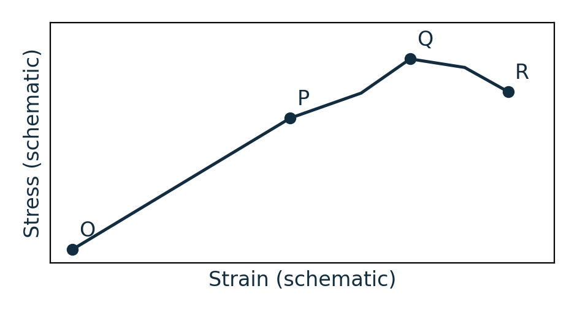
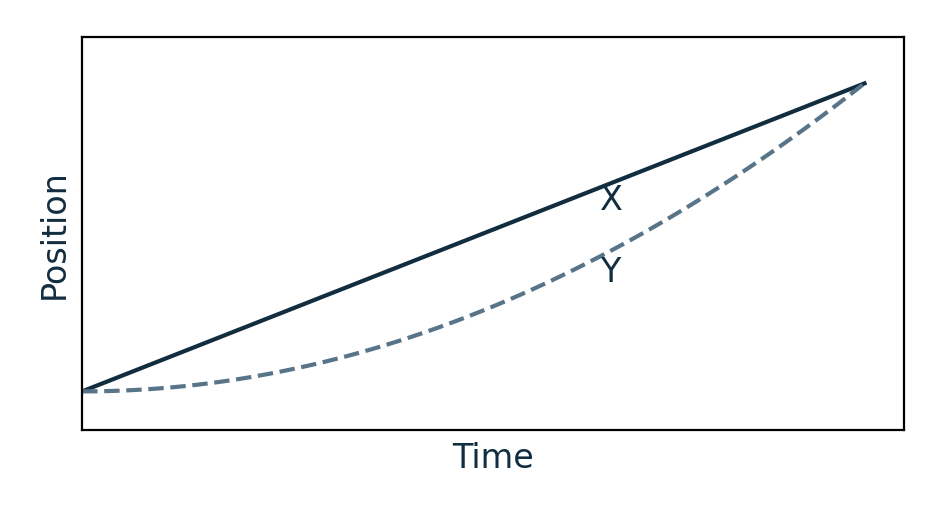
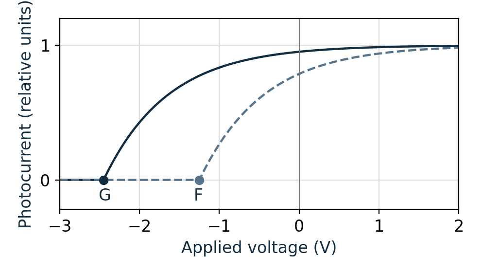
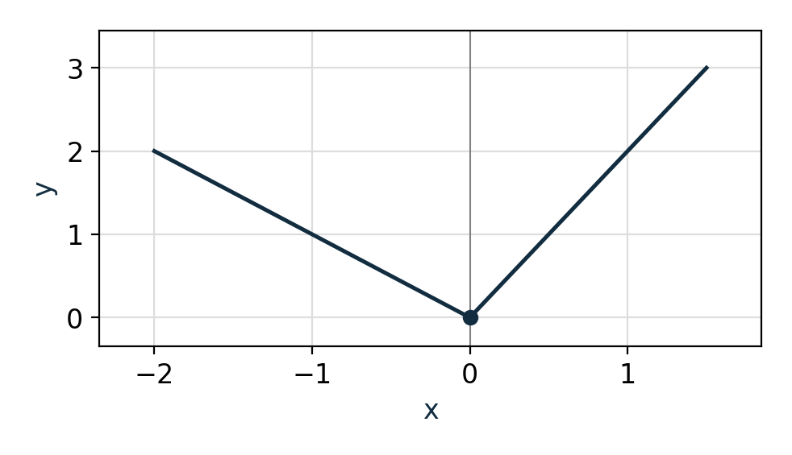
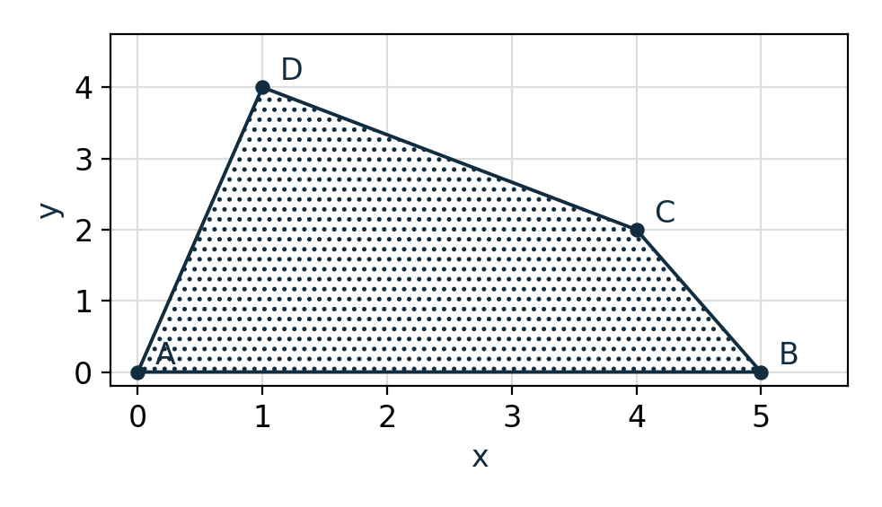

COMEDK UGET Test 16
180 minutes · 180 questions · +1 per correct answer · No negative marking
Physics
Q001. An isolated air capacitor has capacitance C and voltage V. It is filled with a dielectric of relative permittivity 3, then connected to a source of voltage V in the original polarity. How much extra free charge does the source supply to its positive plate?
A) CV
B) 2CV
C) 3CV
D) Zero
Worked solution
Answer: (B) 2CV
Why and working: Initially Q=CV and isolation preserves it during insertion. After reconnection C′=3C and Q′=3CV, so the added charge is 2CV.
Why not the others: (A) counts an incorrect capacitance increment. (C) gives the final charge rather than the increment. (D) applies isolation after the source is attached.
Q002. A calibration fluid has density 1.2 g/cm³. How many kilograms of it occupy 250 cm³?
A) 0.30 kg
B) 3.0 kg
C) 30 kg
D) 300 kg
Worked solution
Answer: (A) 0.30 kg
Why and working: In the given centimetre units mass is 1.2×250=300 g. Dividing by 1000 converts it to 0.30 kg.
Why not the others: (B) divides by only 100. (C) divides by only ten. (D) keeps the grams as kilograms.
Q003. A cell supplies 2 A to a load and loses 0.6 V across its internal resistance. What is that resistance?
A) 1.2 Ω
B) 3.33 Ω
C) 0.30 Ω
D) 0.60 Ω
Worked solution
Answer: (C) 0.30 Ω
Why and working: The internal voltage drop is Ir. Dividing 0.6 V by 2 A yields 0.30 Ω.
Why not the others: (A) multiplies drop by current. (B) takes current divided by drop. (D) copies the voltage without dividing by current.
Q004. A wire carries current north in a uniform field directed east. It is rotated until its current is east, with magnitude and field held fixed. How does the magnetic force change?
A) It grows from zero to its maximum magnitude
B) It falls from its maximum magnitude to zero
C) It keeps the same magnitude and reverses
D) It keeps the same direction and doubles
Worked solution
Answer: (B) It falls from its maximum magnitude to zero
Why and working: Initially current and field are perpendicular, maximising BIL sin θ. After rotation they are parallel, so the cross product vanishes.
Why not the others: (A) reverses the initial and final angles. (C) the final force vanishes. (D) fixed current does not fix the angle factor.
Q005. A boat moves 9 m east in the laboratory while a platform observer moves 3 m east and 8 m north. What is the magnitude of the boat's displacement in the observer's translating frame?
A) 17 m
B) 6 m
C) 10 m
D) √208 m
Worked solution
Answer: (C) 10 m
Why and working: Subtract observer displacement from boat displacement to obtain (6,−8) m. Its Euclidean norm is 10 m.
Why not the others: (A) adds the magnitudes rather than using relative components. (B) ignores the north–south component. (D) uses the sum of the displacement vectors.
Q006. Two identical iron specimens are cooled below their Curie temperature in zero applied field. Why can their net magnetisations still be small?
A) Cooling always destroys every domain
B) Iron below the Curie point can only be diamagnetic
C) Zero applied field forbids any local magnetic order
D) Different spontaneously magnetised domains can cancel in the bulk
Worked solution
Answer: (D) Different spontaneously magnetised domains can cancel in the bulk
Why and working: Below Curie temperature domains may have spontaneous magnetisation even when their directions sum to little net moment.
Why not the others: (A) domains can form below Curie temperature. (B) iron can be ferromagnetic there. (C) local and bulk magnetisation differ.
Q007. A generator runs twice as fast while the magnetic field is reduced to half. Coil geometry is unchanged. How do frequency and peak emf change?
A) Both double
B) Frequency doubles and peak emf is unchanged
C) Both are unchanged
D) Frequency halves and peak emf doubles
Worked solution
Answer: (B) Frequency doubles and peak emf is unchanged
Why and working: Frequency scales with angular speed. Peak emf is NBAω, so the field and speed factors cancel for amplitude.
Why not the others: (A) ignores the reduction in B. (C) frequency follows rotation rate. (D) reverses the frequency scaling.
Q008. Which pair can describe a runner who completes one lap of a closed track and stops at the starting mark?
A) Zero distance and zero displacement
B) Positive distance and zero displacement
C) Positive distance and displacement equal to the perimeter
D) Zero distance and a nonzero displacement magnitude
Worked solution
Answer: (B) Positive distance and zero displacement
Why and working: Distance sums the travelled path. Displacement is the final position minus the initial position and vanishes after a lap.
Why not the others: (A) closing the path does not erase distance. (C) the perimeter is a path length, not the endpoint difference. (D) neither quantity matches this pairing.
Q009. An object is 30 cm from a thin converging lens and initially gives a real image of the same height in magnitude. A stronger lens is put in its place. Its real image is half the object height. By how much did the lens power increase?
A) 5 D
B) 10 D
C) 5/3 D
D) 10/3 D
Worked solution
Answer: (D) 10/3 D
Why and working: Initially v=30 cm, so f=15 cm and power is 20/3 D. After replacement v=15 cm, giving f=10 cm and power 10 D. Subtract to get 10/3 D.
Why not the others: (A) uses the wrong focal length for one of the configurations. (B) gives the second lens power alone. (C) halves the difference without justification.
Q010. An infinite line charge has field magnitude 40 N/C at r=0.30 m. A concentric Gaussian cylinder of radius 0.30 m encloses 0.60 m of the line. What is the magnitude of its electric flux?
A) 14.4π N·m²/C
B) 7.2π N·m²/C
C) 24π N·m²/C
D) Zero
Worked solution
Answer: (A) 14.4π N·m²/C
Why and working: The field is radial, so the end caps contribute zero. The curved area is 2π×0.30×0.60 m², and multiplying by 40 N/C gives 14.4π N·m²/C.
Why not the others: (B) uses πrL rather than 2πrL. (C) omits the given cylinder length or radius factor. (D) the line charge lies inside the cylinder.
Q011. An air-track glider moves right at steady speed with negligible net force. Which observation illustrates inertia?
A) Its momentum steadily grows
B) It continues with the same velocity while the net force stays zero
C) Its speed must decay without a continuing push
D) It accelerates toward the centre of the track
Worked solution
Answer: (B) It continues with the same velocity while the net force stays zero
Why and working: Zero net force gives zero acceleration. A nonzero velocity can persist without a force keeping it in motion.
Why not the others: (A) would require net force. (C) a push is needed to change velocity, not to maintain it. (D) no inward acceleration follows from zero force.
Q012. A 3 μF capacitor in series with another capacitor gives equivalent capacitance 2 μF. What is the other capacitance?
A) 1 μF
B) 5 μF
C) 1.2 μF
D) 6 μF
Worked solution
Answer: (D) 6 μF
Why and working: The reciprocal rule gives 1/C=1/2−1/3=1/6 in inverse microfarads.
Why not the others: (A) subtracts capacitances directly. (B) adds the given capacitances. (C) would make the equivalent smaller than specified.
Q013. A 3 V cell with internal resistance 1 Ω and a 2 V cell of resistance 2 Ω are oriented to aid each other in series. Their output terminals are open. What voltage would an ideal voltmeter read across them?
A) 1 V
B) 2 V
C) Zero
D) 5 V
Worked solution
Answer: (D) 5 V
Why and working: The open circuit draws no current, so neither internal resistor contributes a drop. The aiding emfs add to 5 V.
Why not the others: (A) uses opposing polarities. (B) omits one cell. (C) open circuit removes current rather than emf.
Q014. Along a straight path a constant resisting force of 2 N opposes the displacement. A driving force grows linearly from 2 N to 8 N across a distance of 3 m. What is the net work?
A) 9 J
B) 15 J
C) 18 J
D) 6 J
Worked solution
Answer: (A) 9 J
Why and working: Driving work is the trapezoid area (2+8)×3/2=15 J. Resistance contributes −6 J, giving 9 J.
Why not the others: (B) ignores the resisting work. (C) uses final rather than mean net driving force. (D) gives the magnitude of resisting work.
Q015. Two long parallel wires carry equal currents in opposite directions. They are moved to twice their separation and both currents are doubled. How does the force per unit length change?
A) It becomes attractive and doubles
B) It remains repulsive and halves
C) It remains repulsive and doubles
D) It becomes attractive and stays fixed
Worked solution
Answer: (C) It remains repulsive and doubles
Why and working: The direction is repulsive for opposite currents. Magnitude scales as I₁I₂/d and changes by 4/2=2.
Why not the others: (A) current senses did not change. (B) omits the two current factors. (D) neither prediction matches the preserved current sense or scaling.
Q016. An ideal transformer has 800 primary turns. Its primary voltage is 240 V rms and its secondary voltage is 18 V rms. How many secondary turns does it have?
A) 40
B) 60
C) 120
D) 800
Worked solution
Answer: (B) 60
Why and working: Use N_s/N_p=V_s/V_p=18/240. Multiplying 800 by that ratio gives 60 turns.
Why not the others: (A) uses the wrong voltage ratio. (C) doubles the required ratio. (D) would preserve the input voltage.
Q017. A sealed trolley has two people initially at rest on a frictionless track. One walks left while the other remains at rest relative to the trolley. What happens to the centre of mass of the entire system horizontally?
A) It moves left at the walking person's speed
B) It moves right at trolley speed
C) It cannot be determined without the individual masses
D) It stays at its original position
Worked solution
Answer: (D) It stays at its original position
Why and working: No external horizontal force acts. The centre of mass has the initial zero horizontal velocity even though internal components move.
Why not the others: (A) counts one component only. (B) the trolley is just one component. (C) initial total momentum and external force suffice.
Q018. A +5 D and a −2 D lens in contact form a real image of a very distant object in air. At what distance from the pair is the image approximately formed?
A) 20 cm
B) 33.3 cm
C) 14.3 cm
D) 50 cm
Worked solution
Answer: (B) 33.3 cm
Why and working: Powers add to +3 D. For a very distant object the image lies near the focal point, at 1/3 m.
Why not the others: (A) uses the converging lens by itself. (C) adds power magnitudes. (D) uses only the magnitude of the diverging lens's focal length.
Q019. Two infinite parallel insulating sheets each have charge density +σ. Where does their combined electric field vanish?
A) Only on the outer side of the left sheet
B) Between the sheets
C) Only on the outer side of the right sheet
D) On both outer sides but not between them
Worked solution
Answer: (B) Between the sheets
Why and working: Each sheet contributes σ/(2ε₀) away from itself. These fields oppose between the sheets and reinforce on either outside.
Why not the others: (A) both contributions point left there. (C) both contributions point right there. (D) reverses the regions of reinforcement and cancellation.
Q020. Which quantity sweeps equal values in equal times for the radius vector from the Sun along an elliptical planetary orbit?
A) Arc length along the orbit
B) Change of radius
C) Area
D) Change of direction angle
Worked solution
Answer: (C) Area
Why and working: Kepler's second law fixes swept area per unit time. A planet's orbital speed and angular rate can vary with distance.
Why not the others: (A) speed varies along the orbit. (B) radius change is not uniform. (D) angular rate changes as orbital radius changes.
Q021. An ideal battery maintains a fixed voltage across a parallel capacitor. A dielectric of relative permittivity 5 is inserted fully, without altering plate spacing. How does the average field between ideal plates change?
A) It becomes one fifth
B) It rises fivefold
C) It stays the same
D) It becomes zero
Worked solution
Answer: (C) It stays the same
Why and working: The battery retains V and the spacing d is fixed, so E=V/d remains unchanged. The added free charge compensates for the polarisation field.
Why not the others: (A) would describe an isolated capacitor with fixed free charge. (B) charge changes without the same increase in net field. (D) nonzero voltage still spans the gap.
Q022. A closed loop carries 2 A through a 4 Ω resistor and a 1 Ω internal resistance in series. In the direction of current an ideal 3 V opposing source gives a voltage drop. What must be the emf of the aiding source?
A) 7 V
B) 10 V
C) 5 V
D) 13 V
Worked solution
Answer: (D) 13 V
Why and working: The resistor drops total 2×(4+1)=10 V. The opposing source adds a 3 V drop. The assisting source must supply the full 13 V rise.
Why not the others: (A) subtracts the opposing source from the required rise. (B) omits the opposing source. (C) confuses total resistance with emf.
Q023. Where on the plotted stress–strain curve does a proportional elastic modulus apply over a finite interval?

A) From P to Q
B) From O to P
C) From Q to R
D) Along the entire curve
Worked solution
Answer: (B) From O to P
Why and working: Over O–P the trace is a straight line through the origin, so stress is proportional to strain. Later segments do not preserve that proportionality.
Why not the others: (A) the slope changes over this interval. (C) stress decreases on part of the shown trace. (D) only the first part is straight through zero.
Q024. A rectangular loop's magnetic moment points due west. The uniform field points due north. Using east, north and up as a right-handed set, which way does its magnetic torque point?
A) Down
B) Up
C) East
D) North
Worked solution
Answer: (A) Down
Why and working: Torque is m×B. West is negative east, so west cross north is negative up.
Why not the others: (B) uses east instead of west for the moment. (C) the cross product is perpendicular to west as well as north. (D) the cross product cannot be parallel to the field.
Q025. A prism is at its minimum deviation in air. Its internal refraction angles are equal and each is 20°. If its incidence angle is 32°, what is the total deviation?
A) 12°
B) 24°
C) 32°
D) 40°
Worked solution
Answer: (B) 24°
Why and working: The apex is 20°+20°=40°. At minimum deviation the emergence angle equals incidence, so δ=32°+32°−40°=24°.
Why not the others: (A) gives the deviation at one face. (C) gives the incidence angle. (D) gives the apex angle.
Q026. A tank has side openings at depths d and 4d below the same liquid surface. How much larger is the gauge pressure at the deeper opening than at the shallower one?
A) 4ρgd
B) ρgd
C) 3ρgd
D) 5ρgd
Worked solution
Answer: (C) 3ρgd
Why and working: Gauge pressure is ρgh. Subtracting the two values gives ρg(4d−d)=3ρgd.
Why not the others: (A) gives the deeper pressure alone. (B) gives the shallower pressure alone. (D) adds rather than subtracts.
Q027. Two isolated concentric thin spherical shells carry +Q and −Q at radii R and 2R. What is the outward electric flux through a concentric sphere at radius 3R/2 and through one at 3R, respectively?
A) Zero and Q/ε₀
B) Q/ε₀ and −Q/ε₀
C) Q/ε₀ and zero
D) Zero through both
Worked solution
Answer: (C) Q/ε₀ and zero
Why and working: The middle Gaussian sphere encloses only +Q, while the outer sphere encloses both charges whose signed sum is zero.
Why not the others: (A) swaps the enclosure results. (B) counts only the negative shell at the outside. (D) the middle sphere encloses +Q.
Q028. A charged capacitor is disconnected and stores energy U. Without changing its capacitance, half its free charge leaks away. What energy remains?
A) U/2
B) 2U
C) U/4
D) 4U
Worked solution
Answer: (C) U/4
Why and working: Use U=Q²/(2C). At fixed C, halving Q reduces energy to a quarter.
Why not the others: (A) assumes linear variation with charge. (B) gives the wrong direction and scaling. (D) uses the inverse square.
Q029. Two samples have the same temperature, but one is much larger. What does the common temperature guarantee when they are brought into thermal contact under otherwise unchanged conditions?
A) Equal internal energies
B) Equal total heat capacities
C) Identical masses
D) No net heat transfer at equilibrium
Worked solution
Answer: (D) No net heat transfer at equilibrium
Why and working: Equality of temperature implies thermal equilibrium. Energy content and heat capacity can depend on amount and material.
Why not the others: (A) energy need not match between different-sized samples. (B) heat capacity is extensive. (C) temperature does not determine mass.
Q030. A balanced bridge initially has arms R and 2R on the left and 3R and 6R on the right, top to bottom. Which pair of added series resistors preserves balance?
A) Add R to the upper left and R to the lower left
B) Add R to both upper arms
C) Add R to the upper left and 2R to the lower left
D) Add 2R to both lower arms
Worked solution
Answer: (C) Add R to the upper left and 2R to the lower left
Why and working: The original ratio is 1/2 on both sides. The first change makes the left pair 2R and 4R, keeping its ratio unchanged.
Why not the others: (A) makes the left ratio 2/3. (B) the upper arms start at different sizes and change ratios unequally. (D) the lower arms also start at unequal sizes.
Q031. Two galvanometers attain the same full-scale deflection with 1 mA and 4 mA respectively. Compare their current sensitivities.
A) The second is four times as sensitive
B) The first is four times as sensitive
C) They are equally sensitive
D) The first is sixteen times as sensitive
Worked solution
Answer: (B) The first is four times as sensitive
Why and working: Sensitivity is deflection per unit current, so at equal deflection it is inversely proportional to the required current.
Why not the others: (A) inverts the comparison. (C) same deflection does not mean same current. (D) squares a linear scaling.
Q032. Can two objects be in thermal equilibrium with each other even if their internal energies differ?
A) No, different energy totals imply sustained heat flow
B) Yes, but only if both have zero heat capacity
C) Yes, equal temperature rather than equal stored energy determines mutual thermal equilibrium
D) No, thermal equilibrium requires equal masses
Worked solution
Answer: (C) Yes, equal temperature rather than equal stored energy determines mutual thermal equilibrium
Why and working: Temperature is the common intensive quantity identified by thermal equilibrium. Objects can share it while different compositions or masses give different energies.
Why not the others: (A) energy totals do not set heat-flow direction. (B) nonzero heat capacities are compatible with equilibrium. (D) temperature can agree at different masses.
Q033. A compound microscope and its original eyepiece give total magnifying power 50 in normal adjustment. The objective contributes linear magnification magnitude 10. With near point 25 cm, what is eyepiece focal length?
A) 5 cm
B) 2.5 cm
C) 10 cm
D) 50 cm
Worked solution
Answer: (A) 5 cm
Why and working: Divide the total power by the objective factor to find eyepiece power 5. Normal adjustment gives D/f_e=5 and f_e=25/5=5 cm.
Why not the others: (B) adds an extra factor two. (C) confuses the objective's magnification with focal length. (D) treats the dimensionless total as a length.
Q034. In normal adjustment two reflecting telescopes use eyepieces of the same focal length. X magnifies twice as strongly as Y. What can be inferred about their objective mirrors?
A) X must have twice the objective diameter
B) Y has twice the objective focal length
C) X has twice the objective focal length
D) Their objective focal lengths are equal because both are reflecting
Worked solution
Answer: (C) X has twice the objective focal length
Why and working: The angular magnification magnitude is proportional to objective focal length for a fixed eyepiece focal length. Objective diameter is a separate property.
Why not the others: (A) the focal-length ratio does not determine the apertures. (B) inverts the proportion. (D) a reflecting design does not fix focal length.
Q035. An ideal gas at 300 K is compressed isothermally to one half its volume. If its initial pressure is P, what are its final pressure and the sign of work done on it?
A) 2P and positive
B) P/2 and positive
C) 2P and negative
D) P and zero
Worked solution
Answer: (A) 2P and positive
Why and working: Constant n and T give P_fV_f=PV_i, hence P_f=2P. Inward displacement against the gas pressure means surroundings do positive work on the gas.
Why not the others: (B) inverts Boyle's relation. (C) gives the sign of work by the gas. (D) isothermal does not mean zero work.
Q036. Two isolated conductors initially carry equal positive charges q. A grounded probe briefly removes net charge q/2 from the pair. They then exchange charge with each other until the first holds q/4. What charge remains on the second?
A) 7q/4
B) 5q/4
C) q/4
D) 3q/2
Worked solution
Answer: (B) 5q/4
Why and working: The grounding step changes the pair's total to 2q−q/2=3q/2. After isolation subtract the final first charge, yielding 5q/4.
Why not the others: (A) ignores grounding. (C) mistakes the first conductor's charge for the second's. (D) gives the total remaining charge.
Q037. A potential is 18 V at distance r from a positive point charge, with zero at infinity. At which radial distance is the potential 6 V?
A) r/3
B) √3r
C) 9r
D) 3r
Worked solution
Answer: (D) 3r
Why and working: Point-charge potential scales as 1/r. A drop by a factor three requires a radius three times larger.
Why not the others: (A) inverts the radial factor. (B) mistakes potential for inverse-square field. (C) squares the radial factor.
Q038. A periodic signal satisfies f(t+0.12 s)=f(t) and has fundamental period 0.04 s. How many complete cycles occur in 0.12 s?
A) One
B) Two
C) Four
D) Three
Worked solution
Answer: (D) Three
Why and working: Cycles are elapsed time divided by fundamental period. Thus 0.12/0.04=3.
Why not the others: (A) a displayed repetition interval may be a multiple of the least period. (B) two cycles take 0.08 s. (C) four cycles take 0.16 s.
Q039. A steady current of 0.32 A crosses a wire section. What number of conduction electrons crosses it per second in net magnitude, using e=1.6×10⁻¹⁹ C?
A) 5×10¹⁸
B) 0.32×10¹⁹
C) 5.12×10⁻²⁰
D) 2×10¹⁸
Worked solution
Answer: (D) 2×10¹⁸
Why and working: Current is charge per second. Divide 0.32 by 1.6×10⁻¹⁹ to obtain the electron count per second.
Why not the others: (A) uses an incorrect division of coefficients. (B) ignores the 1.6 coefficient. (C) multiplies current by charge instead of dividing.
Q040. With Earth-field effects removed, two small compasses are placed on diametrically opposite sides of a straight current-carrying wire at equal radius. How do their directions compare?
A) They point along opposite tangents to the same circle
B) They point along the wire in the same sense
C) They point directly toward one another radially
D) They are perpendicular to each other
Worked solution
Answer: (A) They point along opposite tangents to the same circle
Why and working: The magnetic field circulates about the wire. At opposite points the circular tangents have opposite directions and equal field magnitudes.
Why not the others: (B) the field is transverse to the current line. (C) field lines are tangential, not radial. (D) opposite tangents are antiparallel.
Q041. A pulse travelling along a taut horizontal string briefly moves each point of string upward and downward. What makes it transverse?
A) Particle displacement is perpendicular to the propagation direction
B) The material travels permanently with the pulse
C) Particle displacement points along propagation
D) The pulse requires gas compression to move
Worked solution
Answer: (A) Particle displacement is perpendicular to the propagation direction
Why and working: The disturbance moves along the string while the local displacement is across it. Perpendicular displacement and propagation define a transverse wave.
Why not the others: (B) the oscillators return near equilibrium. (C) would define a longitudinal disturbance. (D) a taut string supports transverse motion.
Q042. One coil has N turns of area A and current I. A second has N/2 turns of area 3A and current I, with circulation reversed. How does the second magnetic moment compare?
A) It is 3/2 as large and in the same direction
B) It is 1/6 as large and opposite
C) It is half as large and in the same direction
D) It is 3/2 as large and opposite in direction
Worked solution
Answer: (D) It is 3/2 as large and opposite in direction
Why and working: The moment is NIA along the right-hand normal. Multiplying the turn and area factors gives 3/2, while reversing circulation reverses the vector.
Why not the others: (A) ignores the reversal. (B) divides rather than multiplies by the area factor. (C) uses only the turn factor and ignores reversal.
Q043. A loop enters a nonuniform field region. Between two instants its area is unchanged, but the net magnetic flux through it is the same. What is its average induced emf over the interval?
A) Necessarily positive
B) Necessarily negative
C) Indeterminate even with the endpoints known
D) Zero
Worked solution
Answer: (D) Zero
Why and working: Average emf equals minus the signed change in flux divided by the elapsed time. Equal endpoint values make it zero even if instantaneous emf varied.
Why not the others: (A) the average signed change vanishes. (B) likewise there is no negative net change. (C) the endpoint fluxes determine the average.
Q044. Which combination of SI base units represents power per unit area?
A) kg·m·s⁻³
B) kg·m⁻²·s⁻²
C) kg·s⁻³
D) kg·s⁻²
Worked solution
Answer: (C) kg·s⁻³
Why and working: Power has units kg·m²·s⁻³ because it is energy per time. Dividing by an area cancels precisely the m² factor.
Why not the others: (A) divides by a length instead of an area. (B) uses the wrong metre and time exponents. (D) uses energy per area instead of power per area.
Q045. Why can a resistor heated by sinusoidal AC dissipate energy even though average current over each cycle is zero?
A) Heating depends on the average of current squared
B) Heat depends on the squared average current only
C) Current magnitude is actually zero for most of each cycle
D) The resistor converts negative current into permanent stored charge
Worked solution
Answer: (A) Heating depends on the average of current squared
Why and working: Instantaneous Joule power is i²R and is nonnegative in both half cycles. The rms current captures the resulting mean power.
Why not the others: (B) squaring after averaging erases the heating term. (C) a sinusoid is nonzero except at its nodes. (D) power loss is not charge accumulation.
Q046. Which quantity must vary with time to give displacement current through a fixed surface?
A) Its mass
B) The surface's fixed area by itself
C) The mean speed of nearby ions regardless of field
D) Electric flux through the surface
Worked solution
Answer: (D) Electric flux through the surface
Why and working: The displacement term is ε₀ dΦ_E/dt. A nonzero electric flux alone is insufficient if it is constant.
Why not the others: (A) mass does not enter the term. (B) fixed area does not change flux by itself. (C) ion speeds are not a substitute for the field flux derivative.
Q047. Two plotted traces are position versus time. Trace X is straight with nonzero slope and trace Y steadily steepens upward. Which comparison follows?

A) Both have uniform velocity
B) X has zero velocity and Y has uniform acceleration necessarily
C) Y has zero velocity because it is curved
D) X has uniform velocity and Y has changing velocity
Worked solution
Answer: (D) X has uniform velocity and Y has changing velocity
Why and working: Slope gives instantaneous velocity. It stays constant for X and increases for Y; the curve alone does not imply constant acceleration.
Why not the others: (A) Y's slope changes. (B) X's slope is nonzero and Y's curvature need not be constant. (C) a curved trace can have a nonzero tangent slope.
Q048. A spherical concave mirror gives a real image half the size of its real object. Using positive distance magnitudes, what is the object distance in terms of focal length f?
A) 3f
B) 2f
C) 3f/2
D) f/3
Worked solution
Answer: (A) 3f
Why and working: For magnification magnitude one half, q=p/2. Plugging into 1/f=1/p+1/q gives 1/f=3/p, so p=3f.
Why not the others: (B) gives unit magnification. (C) is the corresponding image distance. (D) would place the object inside the focus.
Q049. When a spherical light wave expands in a homogeneous medium, what does the wavefront represent at one instant?
A) Points with the largest absolute electric field only
B) A path along which the light must travel sideways
C) Points at the same phase of oscillation
D) A boundary at which frequency changes abruptly
Worked solution
Answer: (C) Points at the same phase of oscillation
Why and working: A wavefront joins points of equal phase. In the spherical case those points lie at equal distance from the uniform point source.
Why not the others: (A) a common phase need not be an amplitude extremum. (B) ray directions are normal to the front in the medium. (D) frequency does not jump at an arbitrary equal-phase surface.
Q050. A marker moves from x=−4 m to x=−1 m, then to x=−6 m along a straight line. What is its net displacement in signed x units?
A) +2 m
B) 8 m
C) −2 m
D) −6 m
Worked solution
Answer: (C) −2 m
Why and working: Subtract initial coordinate from final coordinate, −6−(−4)=−2 m. The intermediate reversal affects distance but not net displacement.
Why not the others: (A) reverses the subtraction. (B) gives total distance. (D) gives the final position only.
Q051. The two photoelectric traces were recorded for one metal with filters F and G. Which trace requires photons of higher frequency?

A) F
B) They require identical frequencies because their high-voltage plateaux agree
C) G
D) Neither frequency can be compared even with the stopping intercepts known
Worked solution
Answer: (C) G
Why and working: Graph G reaches zero current at a more negative applied voltage. Its larger stopping magnitude gives larger maximum electron kinetic energy. The common work function then requires higher photon energy and frequency.
Why not the others: (A) F's stopping magnitude is smaller. (B) a plateau concerns emitted charge rate. (D) known relative stopping magnitudes suffice for one metal.
Q052. Why does raising the energy of incident alpha particles reduce the large-angle scattering fraction from the same thin foil?
A) The target nuclei lose all of their charge
B) A closer encounter is needed for the repulsion to turn a faster particle by a large angle
C) The foil must become thicker at higher energy
D) Alpha particles become electrons at high speed
Worked solution
Answer: (B) A closer encounter is needed for the repulsion to turn a faster particle by a large angle
Why and working: For fixed charges, the Coulomb interaction must exchange more transverse momentum to bend a higher-momentum trajectory by the same angle. Strong deflections then require smaller impact parameters.
Why not the others: (A) target charge stays the same. (C) foil geometry is held fixed. (D) particle identity does not change.
Q053. A puck at rest is acted on by +4 N for 3 s and then −6 N for 2 s along the same line. What can be said at the end?
A) Its momentum is +12 kg·m/s and it is back at the start
B) Its momentum is −12 kg·m/s and it is back at the start
C) Its momentum and displacement are both zero
D) Its momentum is zero, but it has moved in the positive direction
Worked solution
Answer: (D) Its momentum is zero, but it has moved in the positive direction
Why and working: The two impulses cancel. Momentum is positive between the initial and final instants and never becomes negative, so the displacement accumulated is positive.
Why not the others: (A) counts only the first impulse. (B) counts only the second impulse. (C) zero net impulse does not erase prior motion.
Q054. What explains why a nuclear force strong enough to bind nearby nucleons does not hold distant neutral objects together?
A) It has a very short range
B) It acts only over astronomical distances
C) It vanishes for all neutron–proton pairs
D) It is always weaker than gravity between neighbouring nucleons
Worked solution
Answer: (A) It has a very short range
Why and working: The residual nuclear force is significant only on nuclear length scales, unlike long-range gravity.
Why not the others: (B) reverses its range. (C) neutron–proton attraction is important in nuclei. (D) gravity is negligible at nuclear scales compared with this interaction.
Q055. An idealised crystal has a partially filled electronic band at zero temperature. Why can it conduct without thermally crossing a wide gap?
A) Nearby vacant states within that band are available
B) All electronic states are filled and immovable
C) Its electrons must first enter a nuclear state
D) The material has no carriers and current is ionic only
Worked solution
Answer: (A) Nearby vacant states within that band are available
Why and working: An applied field can change occupations near the top of a partially filled band by using nearby available states. A completely filled band has no such empty neighbours.
Why not the others: (B) the band is stipulated partially filled. (C) nuclear states are irrelevant to ordinary conduction. (D) the band itself provides electronic carriers.
Q056. A block's speed rises from 2 to 5 m/s without any mass change. What fraction of its final kinetic energy was supplied as net work during the increase?
A) 3/5
B) 21/25
C) 4/25
D) 25/21
Worked solution
Answer: (B) 21/25
Why and working: The work is the kinetic-energy increment. Dividing by the final kinetic energy gives (25−4)/25.
Why not the others: (A) uses a linear speed ratio. (C) gives the initial kinetic fraction. (D) inverts the required fraction.
Q057. Two negative charges lie on the x-axis at −a and +2a, with magnitudes q and 2q. Which way is the net force on a positive test charge at the origin?
A) Toward −a
B) Toward +2a
C) The forces cancel
D) Perpendicular to the x-axis
Worked solution
Answer: (A) Toward −a
Why and working: The left attraction scales as q/a², the right one as 2q/(2a)²=q/(2a²). Both are axial and the stronger force acts left.
Why not the others: (B) ignores the inverse-square distance factor. (C) rightward attraction is only half as large. (D) all charges lie on a line.
Q058. A dipole's two charges lie equally far from its perpendicular-bisector point P. An extra point charge +Q is then placed distance d from P. What is the final electric potential at P relative to infinity?
A) kQ/d
B) Zero
C) 2kQ/d
D) −kQ/d
Worked solution
Answer: (A) kQ/d
Why and working: The two dipole potentials cancel at P. Electric potential is a scalar, so only the contribution kQ/d from the additional charge remains.
Why not the others: (B) ignores the added charge. (C) counts the added term twice. (D) uses the wrong sign for a positive source.
Q059. A uniform rod of length 8 m and mass 6 kg carries equal point masses at both ends. A third 2 kg mass is attached at the midpoint. Where is the combined centre of mass measured from the left end?
A) 4 m
B) 2 m
C) 6 m
D) It depends on the size of the equal end masses
Worked solution
Answer: (A) 4 m
Why and working: Reflection symmetry pairs equal masses at opposite positions about the rod's midpoint. The third mass is at that midpoint and leaves the balance location unchanged.
Why not the others: (B) breaks left-right symmetry. (C) also breaks left-right symmetry. (D) the common size does not affect the symmetry.
Q060. A material's mobility triples while the carrier density becomes one sixth at fixed electric field and wire area. How does current change?
A) It doubles
B) It halves
C) It rises by a factor of eighteen
D) It stays the same
Worked solution
Answer: (B) It halves
Why and working: Current is proportional to nμ at fixed field and area. Multiplying the two factors gives 3/6=1/2.
Why not the others: (A) inverts the product. (C) uses six rather than one sixth. (D) the two factors do not cancel completely.
Chemistry
Q061. An ideal solution loses 5% of its pure-solvent vapour pressure due to a nonvolatile solute. Half the solvent then evaporates with no solute lost. What fraction of the pure-solvent pressure is now lost at the original temperature?
A) 2/21
B) 1/10
C) 1/20
D) 1/40
Worked solution
Answer: (A) 2/21
Why and working: Initially x_solute=1/20, so the mole ratio is 1:19. Removing half the solvent produces the ratio 2:19 and hence x_solute=2/21.
Why not the others: (B) doubles mole fraction without updating the denominator. (C) applies the original composition. (D) predicts the wrong direction.
Q062. What happens to a particle's de Broglie wavelength if its momentum magnitude becomes zero in the limiting relation λ=h/p?
A) It increases without bound as momentum approaches zero
B) It approaches zero
C) It approaches h
D) It stays fixed for a fixed particle mass
Worked solution
Answer: (A) It increases without bound as momentum approaches zero
Why and working: The wavelength depends on the inverse of momentum, so as positive p tends to zero the quotient grows without bound.
Why not the others: (B) interchanges direct and inverse dependence. (C) Planck's constant does not itself have wavelength units. (D) momentum can change at fixed mass.
Q063. Why does conductivity per unit volume generally decrease on diluting a strong electrolyte even as its molar conductivity increases slightly?
A) Dilution creates more ions per unit volume and reduces mobility to zero
B) Both quantities must decrease because they are synonyms
C) Fewer ions occupy a unit volume even though ion mobility per mole improves
D) A strong electrolyte becomes entirely undissociated when diluted
Worked solution
Answer: (C) Fewer ions occupy a unit volume even though ion mobility per mole improves
Why and working: Specific conductivity depends on charge carriers per volume. Weaker interionic interactions improve the effectiveness per mole at lower concentration, increasing molar conductivity.
Why not the others: (A) reverses the density change. (B) the definitions use different normalisations. (D) strong electrolytes remain essentially ionised.
Q064. Two reactions lose the same amount of reactant in each of four successive equal time intervals, before depletion. Which common rate order can account for that concentration history?
A) First order
B) Zero order
C) Second order
D) Any strictly positive order gives the same pattern exactly
Worked solution
Answer: (B) Zero order
Why and working: Equal absolute losses in equal times indicate a constant rate independent of concentration. The zero-order law gives [A]=[A]₀−kt.
Why not the others: (A) first order gives equal fractional losses instead. (C) a second-order rate falls as concentration falls. (D) positive orders do not give a constant rate here.
Q065. What temporary systematic name follows from the roots for atomic number 120, where 1 is un, 2 bi and 0 nil?
A) Unbinilium
B) Unnilbium
C) Binilunium
D) Untribium
Worked solution
Answer: (A) Unbinilium
Why and working: Read the digits in their given order and append the element ending. The sequence un-bi-nil gives unbinilium.
Why not the others: (B) places zero before two. (C) reverses the sequence. (D) introduces tri for three.
Q066. A transition metal forms a carbide in which tiny guest atoms sit between metal atoms. Why does the guest fit without replacing a metal atom?
A) It becomes a proton in the host nucleus
B) Its size permits occupation of interstitial voids
C) The host lattice contains no atoms
D) The guest must form a separate liquid phase
Worked solution
Answer: (B) Its size permits occupation of interstitial voids
Why and working: Small atoms can occupy the gaps of the metal framework, giving an interstitial structure. The framework's metal sites remain occupied by metal.
Why not the others: (A) this is a crystal arrangement, not a nuclear reaction. (C) the metal sublattice remains present. (D) the guest is part of the solid structure.
Q067. A weak-field octahedral Mn²⁺ complex has d⁵. Which occupancy explains its spin behaviour?
A) t₂g³ e_g² with five singly occupied orbitals
B) t₂g⁵ e_g⁰ with no unpaired electrons
C) t₂g⁶ e_g⁰ with six paired electrons
D) t₂g² e_g³ with all electron pairs
Worked solution
Answer: (A) t₂g³ e_g² with five singly occupied orbitals
Why and working: Weak splitting favours filling all five d orbitals singly before pairing. Three are t₂g and two are e_g.
Why not the others: (B) even low-spin d⁵ retains one unpaired electron. (C) contains six electrons, not five. (D) pairs an upper orbital before the lower trio is singly occupied.
Q068. In carbonate ion three C–O bonds are measured to have the same length. Which explanation accounts for this?
A) One bond is permanently double and two are permanently single
B) The π electron density is delocalised over the three C–O positions
C) Three oxygen nuclei rapidly trade their atomic numbers
D) Identical bonds arise because the carbon is absent from the ion
Worked solution
Answer: (B) The π electron density is delocalised over the three C–O positions
Why and working: The resonance contributors place the double bond at different oxygen positions. Their hybrid gives each matched C–O bond the same average order.
Why not the others: (A) a single localised drawing would predict unequal bonds. (C) resonance redistributes electrons, not nuclei. (D) carbon is present at the centre.
Q069. In bromobenzene, compare the inductive and mesomeric effects of the Br substituent on electrophilic aromatic substitution. Which directly determines the preference for ortho and para sites?
A) Inductive withdrawal creates a permanent extra proton at those sites
B) Inductive withdrawal activates the ring relative to benzene
C) The meta σ complex uniquely obtains lone-pair donation at the brominated carbon
D) Lone-pair donation selectively stabilises the ortho and para σ complexes
Worked solution
Answer: (D) Lone-pair donation selectively stabilises the ortho and para σ complexes
Why and working: The halogen's electron withdrawal accounts for overall deactivation. Its resonance donation helps distinct contributors reached by ortho and para attack, explaining relative orientation.
Why not the others: (A) no protons are added by induction. (B) withdrawal hinders substitution overall. (C) that particular donor contributor is absent in the meta path.
Q070. A lab log describes oxidising a one-carbon alcohol to make formaldehyde and separately uses a two-carbon alcohol as a solvent. Which two alcohols are these, respectively?
A) Ethanol and methanol
B) Ethanol and propan-2-ol
C) Methanol and ethanol
D) Propan-2-ol and ethanol
Worked solution
Answer: (C) Methanol and ethanol
Why and working: Oxidation of methanol retains its single carbon in formaldehyde. Ethanol is the two-carbon alcohol used as a solvent in the scenario.
Why not the others: (A) ethanol oxidation first gives ethanal rather than formaldehyde. (B) the listed solvent has three carbons. (D) oxidising propan-2-ol gives propanone.
Q071. Two routes have the same overall reactants and products. Route X releases 25 kJ in its first step and absorbs 9 kJ in its second. Route Y absorbs 4 kJ in its first step. What must its second step do?
A) Release 20 kJ
B) Release 12 kJ
C) Absorb 20 kJ
D) Release 16 kJ
Worked solution
Answer: (A) Release 20 kJ
Why and working: Route X gives −25+9=−16 kJ. The same endpoint difference requires 4+ΔH₂=−16, so route Y's second step is −20 kJ.
Why not the others: (B) subtracts Y's positive heat with the wrong sign. (C) reverses the step direction. (D) gives the total rather than one step.
Q072. When two ethanal molecules form the initial aldol addition product, which carbon atoms make the new C–C bond?
A) The two carbonyl oxygens through a carbon–carbon bond
B) The two original aldehydic carbons directly
C) The two original methyl carbons directly
D) The donor's α carbon and the acceptor's carbonyl carbon
Worked solution
Answer: (D) The donor's α carbon and the acceptor's carbonyl carbon
Why and working: Deprotonation at the donor's methyl carbon makes the enolate. That α carbon attacks the other molecule's electrophilic carbonyl carbon.
Why not the others: (A) oxygen sites do not make the indicated C–C bond. (B) the donor attacks through its α carbon. (C) the acceptor reacts at C=O.
Q073. What is the aryl product when benzenediazonium chloride is treated with CuBr under Sandmeyer conditions?
A) Chlorobenzene
B) Phenol
C) Bromobenzene
D) Nitrobenzene
Worked solution
Answer: (C) Bromobenzene
Why and working: CuBr supplies bromide substitution at the aryl diazonium position, accompanied by loss of nitrogen gas.
Why not the others: (A) chloride as counterion does not fix this product under CuBr conditions. (B) commonly forms on hydrolysis. (D) no nitrating reagent is stated.
Q074. An aqueous sample of ammonium chloride has acidic pH. Which ion is chiefly responsible for proton transfer to water?
A) NH₄⁺
B) Cl⁻
C) Both ions equally
D) Neither, because all ammonium salts are basic
Worked solution
Answer: (A) NH₄⁺
Why and working: NH₄⁺ is the conjugate acid of the weak base ammonia and can give H₃O⁺ to water. Cl⁻ is the conjugate base of a strong acid and hydrolyses negligibly.
Why not the others: (B) chloride is a very weak base in this context. (C) their hydrolysis tendencies differ. (D) the cation supplies an acidic equilibrium.
Q075. Which statement explains why the liver can rapidly mobilise glycogen during demand?
A) Its chains have no glycosidic bonds
B) It is made mainly of hydrophobic amino acids
C) Its highly branched structure offers many terminal sites for enzyme action
D) Its sole purpose is to form plant cell walls
Worked solution
Answer: (C) Its highly branched structure offers many terminal sites for enzyme action
Why and working: Glycogen stores glucose units in an α-linked branched polymer. Multiple terminal sites let enzymes mobilise glucose units in parallel.
Why not the others: (A) glycosidic bonds connect the units. (B) its monomer is glucose rather than an amino acid. (D) cellulose is a plant wall polymer.
Q076. A solute is added to a solvent at an ideal effective molality of 0.25 mol/kg. Given K_f=2.0 K·kg/mol and K_b=0.50 K·kg/mol, how far apart are the solution's freezing and boiling points relative to those of pure solvent at the same pressure?
A) Their separation increases by 0.375 K
B) Their separation decreases by 0.625 K
C) Their separation increases by 0.625 K
D) Their separation increases by 0.50 K
Worked solution
Answer: (C) Their separation increases by 0.625 K
Why and working: Freezing falls by 2.0×0.25=0.50 K and boiling rises by 0.50×0.25=0.125 K. Opposite shifts increase the gap by their sum.
Why not the others: (A) subtracts the shift magnitudes. (B) uses the wrong direction for the combined gap. (D) counts only freezing depression.
Q077. Which comparison best separates resonance from hyperconjugation in the usual qualitative treatment of organic molecules?
A) Hyperconjugation requires protons to leave permanently from a σ bond
B) Hyperconjugation involves a neighbouring σ bond donating into a suitable p or π system, while resonance contributors can place π bonds or lone pairs differently
C) Resonance is migration of one nucleus to a new position
D) Both concepts require complete chemical separation into ions
Worked solution
Answer: (B) Hyperconjugation involves a neighbouring σ bond donating into a suitable p or π system, while resonance contributors can place π bonds or lone pairs differently
Why and working: Both describe delocalisation. In hyperconjugation the donor is typically an adjacent σ bond, while standard resonance contributors can redistribute lone-pair or π electrons without changing the nuclear framework.
Why not the others: (A) no permanent proton loss is required. (C) resonance leaves nuclei fixed. (D) delocalisation is not dissociation.
Q078. Current changes in one copper electrolysis run: 2 A flows for 30 s and then 4 A for 15 s. How many coulombs contribute to deposition if efficiency is ideal?
A) 90 C
B) 180 C
C) 60 C
D) 120 C
Worked solution
Answer: (D) 120 C
Why and working: Integrate current by summing the rectangular time intervals: Q=2×30+4×15=120 C.
Why not the others: (A) uses a simple mean current for unequal intervals. (B) uses the largest current over all 45 seconds. (C) counts only one interval.
Q079. A model collision meets the activation-energy requirement but has a poor relative orientation. What must follow in the collision-theory model?
A) It always produces product once energy is high enough
B) It can fail to form product even with sufficient energy
C) It implies the activation energy is zero
D) It cannot be considered a collision at all
Worked solution
Answer: (B) It can fail to form product even with sufficient energy
Why and working: Effective collisions require suitable relative orientation as well as energy. Either requirement can fail independently.
Why not the others: (A) ignores the geometric requirement. (C) energy sufficiency does not set the barrier. (D) an ineffective collision can still occur.
Q080. Why can 2-methylpropene not display cis–trans isomerism about its double bond?
A) Rotation about a double bond is completely unrestricted
B) Carbon cannot form a double bond with another carbon
C) It is a cyclic alkene with a forced trans arrangement
D) One double-bond carbon bears two identical substituents
Worked solution
Answer: (D) One double-bond carbon bears two identical substituents
Why and working: The terminal carbon bears two H atoms and the other double-bond carbon bears two methyl groups. Each side would need distinguishable groups for geometrical isomers.
Why not the others: (A) the π overlap restricts rotation. (B) the molecule contains a C=C bond. (C) 2-methylpropene is acyclic.
Q081. An alkaline chromate solution is acidified without adding an oxidant or reductant. Which new equilibrium condition favours dichromate formation?
A) Higher hydrogen-ion activity
B) Lower hydrogen-ion activity
C) Loss of a chromium electron in every ion
D) Removal of all water by precipitation
Worked solution
Answer: (A) Higher hydrogen-ion activity
Why and working: In 2CrO₄²⁻+2H⁺⇌Cr₂O₇²⁻+H₂O, adding acid pushes the balance toward dichromate. Chromium remains at +6.
Why not the others: (B) this favours chromate instead. (C) there is no chromium oxidation-state change. (D) ordinary aqueous acidification does not remove all water.
Q082. An octahedral complex has three X and three Y ligands. All X ligands occupy mutually adjacent positions. Which isomer label follows?
A) Mer
B) Trans
C) Fac
D) Tetrahedral
Worked solution
Answer: (C) Fac
Why and working: Three mutually adjacent octahedral positions lie on one triangular face. This is the facial arrangement for MX₃Y₃.
Why not the others: (A) a mer arrangement includes an opposite identical pair. (B) trans does not name this three-on-a-face geometry. (D) the coordination geometry is octahedral.
Q083. A molecular compound contains 40.0% carbon, 6.7% hydrogen and 53.3% oxygen by mass, to the stated precision. Use C=12, H=1 and O=16. Which empirical formula follows?
A) C₂HO
B) CHO₂
C) CH₄O
D) CH₂O
Worked solution
Answer: (D) CH₂O
Why and working: Per 100 g the mole amounts are approximately 3.33, 6.7 and 3.33. Dividing by 3.33 gives the ratio 1:2:1.
Why not the others: (A) does not convert all masses to mole ratios consistently. (B) reverses the H and O ratios. (C) the hydrogen ratio is about two, not four.
Q084. Which historical pesticide is noted for persistence and accumulation along food chains?
A) Chloroform
B) Freon-12
C) Iodoform
D) DDT
Worked solution
Answer: (D) DDT
Why and working: DDT is a persistent organochlorine insecticide. Its resistance to breakdown and affinity for fatty tissues support bioaccumulation.
Why not the others: (A) chloroform is a different small chlorinated compound. (B) Freon-12 was mainly a refrigerant. (C) iodoform is a different halomethane.
Q085. In the cumene route to phenol, which small organic product accompanies phenol after acid cleavage of cumene hydroperoxide?
A) Methanal
B) Ethanoic acid
C) Acetone
D) Ethene
Worked solution
Answer: (C) Acetone
Why and working: Acid cleavage of cumene hydroperoxide gives phenol and the three-carbon ketone acetone. The cumene side-chain carbons appear in the ketone product.
Why not the others: (A) retains only one carbon. (B) is not the ketone coproduct. (D) is an alkene rather than the cleavage coproduct.
Q086. For two wave packets at the uncertainty limit, packet A has one quarter of packet B's position uncertainty. How do their momentum uncertainties compare?
A) A has four times B's
B) B has four times A's
C) They are equal
D) A has sixteen times B's
Worked solution
Answer: (A) A has four times B's
Why and working: At the stated limit ΔxΔp=ℏ/2. The product is fixed, so a factor of one fourth in position demands a factor four in momentum.
Why not the others: (B) inverts the inverse dependence. (C) the differing position uncertainties demand differing momentum spreads. (D) the dependence is inverse linear.
Q087. A carbonyl compound with two carbons is historically called acetaldehyde and can be used as an intermediate for producing acetic acid. Which structure has the stated identity?
A) HCHO
B) CH₃COCH₃
C) CH₃CH₂OH
D) CH₃CHO
Worked solution
Answer: (D) CH₃CHO
Why and working: Acetaldehyde is ethanal, a two-carbon terminal aldehyde. Oxidation of its −CHO group gives ethanoic acid.
Why not the others: (A) is the one-carbon aldehyde. (B) is a three-carbon ketone. (C) is a two-carbon alcohol rather than acetaldehyde.
Q088. How many amino-acid residues make up a linear chain with four peptide bonds and no cyclic closures?
A) Four
B) Three
C) Eight
D) Five
Worked solution
Answer: (D) Five
Why and working: An open chain of n residues has one bond between every neighbouring pair, hence n−1=4 and n=5.
Why not the others: (A) confuses link count with residue count. (B) would give only two links. (C) counts two endpoints per bond without shared residues.
Q089. A central atom has four electron domains, three bonding and one lone pair. What molecular shape is expected?
A) Trigonal planar
B) Tetrahedral with four bonded atoms
C) Linear
D) Trigonal pyramidal
Worked solution
Answer: (D) Trigonal pyramidal
Why and working: Four electron domains adopt roughly tetrahedral geometry. The molecular shape considers only the three attached atoms, giving a pyramid.
Why not the others: (A) would have only three electron domains in this case. (B) includes the lone pair as an atom. (C) does not match the three bonds.
Q090. Two dilute sucrose solutions at the same temperature have osmotic pressures π and 3π. Mixing equal volumes gives what osmotic pressure, assuming additive volumes and ideal behaviour?
A) 4π
B) 3π
C) 2π
D) π
Worked solution
Answer: (C) 2π
Why and working: At fixed T pressure is proportional to concentration. Equal-volume mixing averages the two sucrose concentrations, so the new osmotic pressure is (π+3π)/2=2π.
Why not the others: (A) adds pressures without adding solvent volume. (B) uses the more concentrated solution alone. (D) uses the less concentrated solution alone.
Q091. A battery cell runs a load until exhausted, while another cell at the same terminals uses an external supply to deposit copper. Which statement distinguishes their energy conversion?
A) Both merely consume electrical energy from their loads
B) The battery delivers electrical energy from reaction; the plating cell consumes it to drive reaction
C) Both are spontaneous generators as long as copper is present
D) The battery is electrolytic during spontaneous discharge
Worked solution
Answer: (B) The battery delivers electrical energy from reaction; the plating cell consumes it to drive reaction
Why and working: A discharging galvanic cell provides electrical work. The powered electrolytic cell uses external electrical work to sustain its nonspontaneous overall process.
Why not the others: (A) the battery supplies its load. (C) the deposition setup is driven by a supply. (D) discharge is galvanic.
Q092. Combustion of graphite has enthalpy −394 kJ/mol, and combustion of CO to CO₂ has −283 kJ/mol. What is the standard formation enthalpy of CO(g) from graphite and O₂?
A) −677 kJ/mol
B) +111 kJ/mol
C) −111 kJ/mol
D) −283 kJ/mol
Worked solution
Answer: (C) −111 kJ/mol
Why and working: Formation of CO followed by its combustion gives graphite combustion with the same final state. Therefore ΔH_f(CO)−283=−394 and ΔH_f=−111.
Why not the others: (A) adds the two given values instead of subtracting the second path. (B) reverses the sign. (D) gives only the CO combustion step.
Q093. Two Arrhenius plots have the same intercept but one has a steeper downward slope on a graph of ln k against 1/T. At the same positive 1/T, what follows for that reaction?
A) It has a smaller activation energy and smaller k
B) It has a higher activation energy and larger k
C) It has a higher activation energy and smaller k
D) Both reaction rates must agree because intercepts agree
Worked solution
Answer: (C) It has a higher activation energy and smaller k
Why and working: The slope is −E_a/R. The steeper downward line has larger E_a and lower ln k at positive 1/T for the same intercept.
Why not the others: (A) incorrectly reads the slope magnitude. (B) larger barrier lowers k with the same prefactor. (D) intercept equality does not remove slope differences.
Q094. In a half-reaction where permanganate becomes MnO₂, its manganese oxidation state changes from +7 to what value?
A) +2
B) +4
C) +6
D) Zero
Worked solution
Answer: (B) +4
Why and working: Two oxygens at −2 in neutral MnO₂ require manganese to be +4. The process is a three-electron reduction from +7.
Why not the others: (A) describes a different reduced product. (C) describes manganate instead. (D) manganese is still in an oxide.
Q095. A buffer starts with 0.30 mol weak acid HA and 0.10 mol A⁻. What amount of strong base must react with HA to make pH=pK_a, assuming no other reaction?
A) 0.20 mol
B) 0.15 mol
C) 0.10 mol
D) 0.30 mol
Worked solution
Answer: (C) 0.10 mol
Why and working: Let x mol convert HA to A⁻. Equal amounts are needed for log ratio zero, so 0.30−x=0.10+x and x=0.10.
Why not the others: (A) subtracts the amounts without crediting both changes. (B) takes half the initial acid rather than half the imbalance. (D) would consume all initial acid.
Q096. In haemoglobin, coordination chemistry describes what structural feature?
A) An ionic lattice made only of sodium and chloride
B) An iron centre bound within a ligand environment
C) A protein containing no metal ion
D) An isolated free iron nucleus with no attached atoms
Worked solution
Answer: (B) An iron centre bound within a ligand environment
Why and working: The heme environment binds Fe through nitrogen donors of its porphyrin ligand, an example of biological coordination.
Why not the others: (A) heme is a molecular coordination environment. (C) iron is a metal centre in heme. (D) the iron is coordinated, not isolated.
Q097. Which ion is formed when phenol gives up its hydroxyl proton?
A) Phenyl radical
B) Benzoate
C) Ethoxide
D) Phenoxide
Worked solution
Answer: (D) Phenoxide
Why and working: Removal of H⁺ from the phenolic O–H bond leaves C₆H₅O⁻. Its negative charge is stabilised through resonance with the ring.
Why not the others: (A) proton loss gives an anion rather than that radical. (B) benzoate requires a carboxyl group. (C) ethoxide has a two-carbon alkyl group.
Q098. A neutral A–B bond breaks so that each fragment keeps one of the shared electrons. Which products are expected from an initially closed-shell bond?
A) Two radicals
B) A⁺ and B⁻ ions only
C) Two cations
D) A double bond between the fragments
Worked solution
Answer: (A) Two radicals
Why and working: Splitting the shared pair equally is homolysis. Each separated fragment has one unpaired electron from the original bond.
Why not the others: (B) unequal splitting would create ions. (C) does not conserve net charge. (D) the bond is broken rather than strengthened.
Q099. Which acid should be stronger, ethanoic acid or fluoroethanoic acid, and why?
A) Ethanoic acid because fluorine always donates electron density through σ bonds
B) Fluoroethanoic acid because fluorine stabilises its conjugate base inductively
C) They are equally acidic because both have a carboxyl proton
D) Fluoroethanoic acid because it lacks a carboxyl group
Worked solution
Answer: (B) Fluoroethanoic acid because fluorine stabilises its conjugate base inductively
Why and working: Fluorine withdraws through σ bonds and stabilises the carboxylate negative charge. Stabilising the product of dissociation favours acidity.
Why not the others: (A) reverses fluorine's inductive effect. (C) substituents change conjugate-base stability. (D) both are carboxylic acids.
Q100. Which feature defines protein quaternary structure?
A) Arrangement of two or more folded polypeptide subunits relative to each other
B) The amino-acid sequence of one chain
C) The covalent location of each peptide bond alone
D) An α helix in a short portion of one chain
Worked solution
Answer: (A) Arrangement of two or more folded polypeptide subunits relative to each other
Why and working: Quaternary structure concerns assembly between separate chains. Local folds and each chain's primary sequence belong to other levels.
Why not the others: (B) defines primary structure. (C) specifies primary connectivity. (D) an α helix is secondary structure.
Q101. When ethene is hydrogenated, what happens to the carbon–carbon bond order?
A) It rises from two to three
B) It remains two because hydrogen is only a catalyst
C) It falls from two to one as each carbon gains H
D) It drops to zero because the carbon chain divides
Worked solution
Answer: (C) It falls from two to one as each carbon gains H
Why and working: Hydrogen addition consumes the π bond while leaving the C–C σ bond. The H atoms add across the old double bond to give ethane.
Why not the others: (A) would increase unsaturation. (B) hydrogen is consumed as a reactant. (D) ordinary hydrogenation retains the carbon skeleton.
Q102. A solute that dimerises has an apparent molar mass 150 g/mol in solution when analysed as if i=1. Its true molar mass is 120 g/mol. What is its measured van't Hoff factor?
A) 0.80
B) 1.25
C) 0.20
D) 1.20
Worked solution
Answer: (A) 0.80
Why and working: The apparent molar mass is true mass divided by i. Therefore i=120/150=0.80, consistent with fewer solute particles after association.
Why not the others: (B) takes the reciprocal and predicts dissociation-like behaviour. (C) is the fractional decrease from unity rather than i. (D) is above one despite association.
Q103. In a lead storage cell during discharge, which change occurs at both electrodes?
A) Both active materials become PbO₂
B) Both active materials are converted to metallic lead
C) Both active materials are converted to PbSO₄
D) Both electrodes release molecular hydrogen as their sole product
Worked solution
Answer: (C) Both active materials are converted to PbSO₄
Why and working: The Pb anode oxidises and the PbO₂ cathode reduces. In sulfuric acid both discharge products are lead sulfate.
Why not the others: (A) PbO₂ starts on one electrode and is consumed there. (B) Pb starts on one side but is converted to sulfate. (D) normal discharge uses the stated lead reactions.
Q104. For 2CO+O₂→2CO₂, a vessel starts with 0.60 mol CO and 0.20 mol O₂. Which pair gives CO₂ produced and CO left after completion?
A) 0.60 mol and zero
B) 0.40 mol and 0.20 mol
C) 0.20 mol and 0.40 mol
D) 0.40 mol and zero
Worked solution
Answer: (B) 0.40 mol and 0.20 mol
Why and working: The oxygen runs out after reacting with 0.40 mol CO. The one-to-one CO-to-CO₂ ratio gives 0.40 mol product and 0.20 mol CO remains.
Why not the others: (A) would require 0.30 mol oxygen. (C) uses a one-to-one oxygen-to-CO₂ relation. (D) does not conserve the unreacted CO.
Q105. What is the predominant common oxidation state of lanthanoids in their simple compounds?
A) −3
B) +3
C) +7
D) Zero in every compound
Worked solution
Answer: (B) +3
Why and working: Loss of the two outer 6s electrons and one more accessible electron commonly gives Ln³⁺. Some members also stabilise other states.
Why not the others: (A) the common ions are cations. (C) +7 is not the prevailing lanthanoid state. (D) compound formation commonly involves nonzero oxidation states.
Q106. Phenolic starting rings used to make phenol–formaldehyde resins may react at more than one site per ring. Which feature permits branching during resin formation?
A) Each aromatic unit necessarily has only one possible attachment site
B) Only the hydroxyl hydrogen is replaced while all carbon sites remain inactive
C) Several activated ortho and para positions can link a phenolic ring to more than one other unit
D) Phenol has no aromatic carbon sites
Worked solution
Answer: (C) Several activated ortho and para positions can link a phenolic ring to more than one other unit
Why and working: The phenolic OH increases reactivity at multiple ring positions. Methylene links formed at several of those positions can turn linear growth into a network.
Why not the others: (A) single attachment could not give branching. (B) ring carbon sites participate in linking. (D) phenol contains a benzene ring.
Q107. Which set of quantum numbers is forbidden for an electron in a 3p subshell?
A) n=3, l=1, m_l=1, m_s=−1/2
B) n=3, l=1, m_l=2, m_s=+1/2
C) n=3, l=1, m_l=0, m_s=+1/2
D) n=3, l=1, m_l=−1, m_s=−1/2
Worked solution
Answer: (B) n=3, l=1, m_l=2, m_s=+1/2
Why and working: For a p subshell l=1. Then m_l can be −1, 0 or +1, so +2 is forbidden despite an allowed spin.
Why not the others: (A) all four values in this set are allowed. (C) zero magnetic quantum number is allowed. (D) negative one and negative spin are allowed.
Q108. What organic ion results when ethanoic acid reacts completely with aqueous sodium hydrogen carbonate?
A) Ethoxide
B) Ethanolate radical
C) Ethyl cation
D) Ethanoate
Worked solution
Answer: (D) Ethanoate
Why and working: Hydrogen carbonate accepts the carboxyl proton, giving CH₃COO⁻. Carbonic acid produced in the proton transfer can then break down into CO₂ and water.
Why not the others: (A) ethoxide lacks the carbonyl group. (B) simple acid–base transfer does not generate a radical. (C) the carboxylate product is negative.
Q109. When an enzyme is denatured but the peptide bonds remain intact, why can its catalytic activity still fall strongly?
A) Peptide bonds must be cut for any enzyme activity to change
B) The active site's shape and chemical arrangement depend on folding
C) The substrate's molecular formula necessarily changes first
D) The denatured enzyme converts into a different element
Worked solution
Answer: (B) The active site's shape and chemical arrangement depend on folding
Why and working: Folding places important residues in a specific geometry. Disrupting that three-dimensional arrangement can prevent binding and catalysis even with unchanged sequence.
Why not the others: (A) sequence preservation alone does not preserve active-site shape. (C) activity can change without a different substrate formula. (D) denaturation is not transmutation.
Q110. What hybridisation is assigned to the boron atom in planar BF₃ under the usual valence-bond description?
A) sp
B) sp²
C) sp³
D) d²sp³
Worked solution
Answer: (B) sp²
Why and working: Three planar σ bonds at near 120° use three sp² hybrid orbitals, with a perpendicular p orbital remaining.
Why not the others: (A) gives two linear hybrid directions. (C) gives four tetrahedral hybrid directions. (D) is an octahedral description.
Q111. In a moist galvanic contact of iron and a more noble metal, why can the iron corrode more readily near the contact?
A) Iron can serve as the local anode and be oxidised
B) Iron becomes a cathode where extra iron ions are always reduced
C) The noble metal changes iron directly into water
D) The electrolyte prevents any ion transport
Worked solution
Answer: (A) Iron can serve as the local anode and be oxidised
Why and working: A conductive path and electrolyte permit a galvanic cell. The less noble iron supplies electrons by oxidation, while reduction occurs at cathodic sites.
Why not the others: (B) assigns the electron-producing metal the wrong role. (C) corrosion is electrochemical oxidation. (D) electrolyte supports ion transport.
Q112. What is the connection between late-lanthanoid ionic radii and the shielding behaviour of 4f electrons?
A) Complete 4f shielding makes each additional proton invisible to the electrons
B) Poor 4f shielding allows rising nuclear charge to contract the common trivalent ions across the series
C) Poor shielding makes the trivalent ions expand across the series
D) The radii are governed entirely by reducing the number of protons across the series
Worked solution
Answer: (B) Poor 4f shielding allows rising nuclear charge to contract the common trivalent ions across the series
Why and working: The filling 4f electrons do not fully screen each added nuclear proton. Effective attraction rises and the formal +3 ions become smaller overall.
Why not the others: (A) screening is incomplete. (C) the stronger attraction shrinks rather than expands the cloud. (D) proton count rises across the series.
Q113. For a particular element, gaseous atoms are produced from its solid with enthalpy +80 kJ/mol and then singly ionised with +420 kJ/mol. What is the enthalpy from solid element to its gaseous monocations and free electrons?
A) +340 kJ/mol
B) −500 kJ/mol
C) +420 kJ/mol
D) +500 kJ/mol
Worked solution
Answer: (D) +500 kJ/mol
Why and working: Both steps are endothermic and concatenate through the same gaseous atoms. By Hess's law the total is 80+420=500.
Why not the others: (A) subtracts the atomisation step. (B) changes the direction of both steps. (C) omits producing gas-phase atoms.
Q114. Which name represents CH₃OCH₃?
A) Methanol
B) Methanal
C) Ethane
D) Methoxymethane
Worked solution
Answer: (D) Methoxymethane
Why and working: An oxygen between two methyl groups gives an ether. Naming one methyl as methoxy on methane gives methoxymethane.
Why not the others: (A) contains hydroxyl instead of a linking oxygen. (B) is an aldehyde. (C) contains no oxygen.
Q115. One endocrine signal causes a response in tissue X but not tissue Y at the same delivered hormone concentration. Which explanation fits without requiring a difference in the signal molecule?
A) X has a suitable receptor or downstream response mechanism that Y lacks
B) The hormone must contain more atoms only in X
C) Every hormone always acts identically on every tissue that receives it
D) The concentration comparison proves the signal is a digestive enzyme
Worked solution
Answer: (A) X has a suitable receptor or downstream response mechanism that Y lacks
Why and working: Hormonal selectivity can depend on recognition by receptors and the signalling machinery of the receiving cell. Equal external concentrations need not give equal responses.
Why not the others: (B) the same delivered molecule can produce different responses. (C) receptor expression and cell context differ. (D) the observation concerns tissue selectivity.
Q116. Which direction does adding chloride drive the dissolution equilibrium AgCl(s)⇌Ag⁺+Cl⁻ at fixed temperature?
A) Toward more dissolution
B) It changes K_sp rather than the concentrations
C) Toward the solid
D) It eliminates the equilibrium entirely
Worked solution
Answer: (C) Toward the solid
Why and working: Added Cl⁻ raises the ion product above K_sp if the solution was saturated. Precipitation lowers free ion concentrations toward equilibrium.
Why not the others: (A) would raise the ion product further. (B) K_sp is fixed at the temperature. (D) a new equilibrium can establish.
Q117. Why does actinoid contraction occur along the series?
A) One proton disappears for every added electron
B) Every added electron goes into an outer 8s orbital
C) The nuclear charge remains constant across all actinoids
D) Added 5f electrons shield additional nuclear charge incompletely
Worked solution
Answer: (D) Added 5f electrons shield additional nuclear charge incompletely
Why and working: Poor 5f shielding means successive increases in Z raise effective nuclear attraction. The ions tend to contract across the series.
Why not the others: (A) Z increases rather than falls. (B) 5f filling is characteristic. (C) different elements have different Z.
Q118. Which pair contains one water-soluble and one fat-soluble vitamin in that order?
A) D and A
B) E and C
C) K and B₁
D) B₁ and D
Worked solution
Answer: (D) B₁ and D
Why and working: Thiamine (B₁) is water-soluble, while vitamin D is fat-soluble. This contrasts B-complex solubility with that of A, D, E and K.
Why not the others: (A) both are fat-soluble. (B) places fat-soluble before water-soluble. (C) also reverses the requested order.
Q119. Which occupied orbital feature distinguishes a carbon radical from a carbocation at an otherwise similar three-coordinate carbon?
A) The radical carries an unpaired electron; the carbocation's relevant p orbital is empty
B) Both carry an unpaired electron
C) The radical carries a filled lone pair while the carbocation carries two lone pairs
D) The carbocation has an extra electron in its p orbital compared with the radical
Worked solution
Answer: (A) The radical carries an unpaired electron; the carbocation's relevant p orbital is empty
Why and working: In the usual simplified structures a carbon radical has one odd electron. The positively charged carbocation lacks that electron and has an empty p orbital.
Why not the others: (B) the carbocation's orbital is empty. (C) a carbon lone pair would describe a different electron count. (D) the positive ion is electron deficient.
Q120. Which link joins adjacent sugars in one strand of DNA, and which interaction helps join complementary bases across its strands?
A) Covalent phosphodiester links along a strand, hydrogen bonding across strands
B) Hydrogen bonds along a strand, covalent peptide bonds across strands
C) Ionic bonds along each strand and metallic bonds across strands
D) Disulfide bonds both along and across all strands
Worked solution
Answer: (A) Covalent phosphodiester links along a strand, hydrogen bonding across strands
Why and working: The sugar–phosphate backbone is covalently continuous. Complementary base pairs interact by hydrogen bonding without becoming one covalent backbone.
Why not the others: (B) peptide bonds join amino-acid residues instead. (C) neither listed bond type describes the backbone and pairs. (D) DNA strands are not joined by ordinary protein disulfides.
Mathematics
Q121. Let F be an antiderivative of (x+2)/√(x²+2x+5). If G(x)=F(x)−√(x²+2x+5), what is G′(x)?
A) x/√(x²+2x+5)
B) Zero
C) 2/√(x²+2x+5)
D) 1/√(x²+2x+5)
Worked solution
Answer: (D) 1/√(x²+2x+5)
Why and working: The derivative of the root is (x+1)/√(x²+2x+5). Subtract its numerator from x+2 to obtain one.
Why not the others: (A) subtracts a constant term rather than the full derivative. (B) would require numerator x+1 in F′. (C) drops the constant in the root derivative.
Q122. The second and fourth terms of a real geometric progression are 6 and 24, and the common ratio is negative. What is the sum of the first two terms?
A) 3
B) 9
C) −9
D) −3
Worked solution
Answer: (A) 3
Why and working: The quotient of the fourth and second terms is r²=4, so r=−2. The first term is 6/(−2)=−3 and the sum is 3.
Why not the others: (B) uses the positive ratio. (C) also misuses the sign of the given second term. (D) gives the first term alone.
Q123. Two nonzero vectors u and v have u·v=16 and lengths 4 and 8. What is cos θ for the angle between them?
A) 2
B) 1/2
C) 1/4
D) 0
Worked solution
Answer: (B) 1/2
Why and working: Divide the dot product by the product of the norms: 16/(4×8)=1/2.
Why not the others: (A) takes the reciprocal. (C) overcounts the norm factor. (D) a nonzero dot product excludes zero cosine.
Q124. For square A, if A²=I, which statement must hold?
A) Only b=0 can have a solution
B) A has inverse −A
C) Every system Ax=b has unique solution x=Ab
D) No solution is unique because A can be singular
Worked solution
Answer: (C) Every system Ax=b has unique solution x=Ab
Why and working: The relation A²=I gives both a left and a right inverse equal to A. Multiplying Ax=b by A recovers x=Ab.
Why not the others: (A) an invertible matrix reaches every b. (B) A(−A)=−I. (D) the relation directly supplies an inverse.
Q125. The line x/6+y/4=1 is translated horizontally 2 units to the right. What is its new x-intercept?
A) 4
B) 6
C) 2
D) 8
Worked solution
Answer: (D) 8
Why and working: The point (6,0) shifts to (8,0), which remains on the x-axis and on the translated line.
Why not the others: (A) shifts it left. (B) ignores the translation. (C) gives only the amount of shift.
Q126. Let y=xeˣ. At which x is its second derivative zero?
A) −1
B) 0
C) 2
D) −2
Worked solution
Answer: (D) −2
Why and working: First y′=(1+x)eˣ. Then y″=(2+x)eˣ, and the exponential factor never vanishes.
Why not the others: (A) makes the first derivative zero. (B) leaves second derivative equal to two. (C) uses the opposite sign.
Q127. For x>3, find the derivative of H(x)=√(x²−9)−3 ln(x+√(x²−9)).
A) (x−3)/√(x²−9)
B) (x+3)/√(x²−9)
C) √(x²−9)/(x−3)
D) x/√(x²−9)
Worked solution
Answer: (A) (x−3)/√(x²−9)
Why and working: The root contributes x/√(x²−9). The standard log derivative is 1/√(x²−9), so subtraction yields the stated numerator.
Why not the others: (B) loses the subtraction sign. (C) inverts the derivative. (D) keeps the root term only.
Q128. The ellipse x²/16+y²/25=1 is rotated 90° about the origin. What are the foci of the rotated ellipse?
A) (0,−3) and (0,3)
B) (−5,0) and (5,0)
C) (−3,0) and (3,0)
D) (−4,0) and (4,0)
Worked solution
Answer: (C) (−3,0) and (3,0)
Why and working: Originally the longer semiaxis is vertical and c²=25−16=9. Rotating moves the foci to the horizontal axis with the same distance three from the centre.
Why not the others: (A) uses the old axis. (B) uses a vertex distance instead of c. (D) uses the shorter semiaxis as c.
Q129. Vectors a and b form adjacent sides of a parallelogram with area 12. If a is replaced by 2a+b while b remains fixed, what is the new area?
A) 12
B) 36
C) 24
D) Zero
Worked solution
Answer: (C) 24
Why and working: Expand (2a+b)×b=2(a×b)+b×b. The self-cross product is zero, so the norm doubles.
Why not the others: (A) misses the factor two. (B) treats the added parallel component as new area. (D) the original cross product is nonzero.
Q130. Let G(x)=∫₋ₓˣ f(t)dt for continuous odd f. Which expression for G′(x) follows directly from differentiating the two limits?
A) f(x)−f(−x)=2f(x)
B) f(x)+f(−x)=0
C) f(x) only
D) −f(−x) only
Worked solution
Answer: (B) f(x)+f(−x)=0
Why and working: The upper limit contributes f(x). The lower limit contributes minus f(−x) times −1, giving a sum that vanishes because f is odd.
Why not the others: (A) forgets the derivative −1 of the lower limit. (C) omits the lower endpoint term. (D) omits the upper endpoint and mishandles the lower sign.
Q131. For f(x)=1/x and a≠0, which simplified difference quotient represents [f(a+h)−f(a)]/h when h and a+h are nonzero?
A) −1/[a(a+h)]
B) 1/[a(a+h)]
C) −1/a² for every h
D) 1/(a+h)
Worked solution
Answer: (A) −1/[a(a+h)]
Why and working: Combine the numerator fractions to get −h/[a(a+h)], then cancel h. Taking the limit later gives −1/a².
Why not the others: (B) reverses the numerator order. (C) gives the limit rather than the quotient for nonzero h. (D) fails to subtract the initial value.
Q132. The integral of f from −3 to 1 equals 6, and its integral from 2 to 1 equals −5. What is its integral from −3 to 2?
A) 1
B) −11
C) −1
D) 11
Worked solution
Answer: (D) 11
Why and working: Reverse the second integral to obtain ∫₁² f=5. Add adjacent intervals to get 6+5=11.
Why not the others: (A) adds the second integral in its given reverse direction. (B) reverses the final limits. (C) uses both signs in reverse order.
Q133. On {1,2,3}, relation R has all diagonal pairs plus (1,2) and (2,1). Which test results apply?
A) It is reflexive and symmetric but not transitive
B) It is reflexive, symmetric and transitive
C) It is symmetric and transitive but not reflexive
D) Only reflexivity holds
Worked solution
Answer: (B) It is reflexive, symmetric and transitive
Why and working: The pairings form two classes, {1,2} and {3}, with all pairs within each class. Composition of same-class pairs stays within a class.
Why not the others: (A) the two-cycle compositions return diagonal pairs already present. (C) the diagonal pairs are included. (D) the two off-diagonal pairs are reverses of each other.
Q134. If P(A)=0.7 and P(B)=0.6, which proposed intersection probability is impossible?
A) 0.30
B) 0.45
C) 0.20
D) 0.60
Worked solution
Answer: (C) 0.20
Why and working: Since P(A∪B)≤1, inclusion–exclusion requires P(A∩B)≥0.7+0.6−1=0.30. It also cannot exceed 0.60.
Why not the others: (A) attains the lower bound. (B) lies between the bounds. (D) attains the upper bound when B is contained in A.
Q135. For positive a, which equation involving principal inverse trig values is true when a=2?
A) arctan a−arctan(1/a)=π/2
B) arcsin a+arccos(1/a)=0
C) arctan a+arctan(1/a)=π
D) arctan a+arctan(1/a)=π/2
Worked solution
Answer: (D) arctan a+arctan(1/a)=π/2
Why and working: Both principal arctangents are acute, and their tangent values are reciprocals. They are complementary, giving sum π/2.
Why not the others: (A) the difference between two acute angles has magnitude below π/2. (B) arcsin 2 is outside the real domain. (C) the two acute angles sum to less than π.
Q136. A square matrix has one nonzero entry in each row and column; the only nonzero entries occur on its main diagonal, and are not all equal. Which classification is most specific among these choices?
A) Scalar matrix
B) Diagonal matrix but not scalar
C) Identity matrix
D) Zero matrix
Worked solution
Answer: (B) Diagonal matrix but not scalar
Why and working: Off-diagonal entries vanish, so it is diagonal. A scalar matrix would have all diagonal entries equal.
Why not the others: (A) violates the unequal entries. (C) identity is a special scalar matrix. (D) the diagonal entries are nonzero.
Q137. Relative to U, sets A and B have n(A)=10, n(B)=9 and n(A∩B)=4, with n(U)=20. How many elements lie outside A but inside the complement of A∩B?
A) 5
B) 6
C) 16
D) 10
Worked solution
Answer: (D) 10
Why and working: Every element outside A is automatically outside A∩B because the intersection is contained in A. Thus the requested set is U minus A and has 20−10 members.
Why not the others: (A) gives the number outside the union. (B) counts A-only members. (C) gives the whole complement of the intersection.
Q138. At x=0 a function is locally given by f(x)=2+5x−3x²+4x³+x⁴. What is f‴(0)−f″(0)?
A) 18
B) 30
C) 7
D) −30
Worked solution
Answer: (B) 30
Why and working: The cubic term contributes 3!×4=24 to f‴(0), and the quadratic contributes 2!(−3)=−6 to f″(0). Subtraction gives 30.
Why not the others: (A) adds rather than subtracts the signed second derivative. (C) compares coefficients without factorial factors. (D) reverses the subtraction.
Q139. The graph joins straight segments of slope −1 and +2 at x=0 with no jump. Which local statement holds?

A) It has a jump at x=0
B) Its derivative at zero is the mean of the two slopes
C) It is continuous and lacks a derivative at x=0
D) It is differentiable with derivative zero at x=0
Worked solution
Answer: (C) It is continuous and lacks a derivative at x=0
Why and working: The line segments meet, giving equal function limits. Their one-sided slopes differ, so the derivative limit does not exist.
Why not the others: (A) the two sides meet at one value. (B) a mean of unequal slopes does not produce a common limit. (D) neither given slope is zero.
Q140. A relation from {1,2,3} to {a,b} has pairs (1,a),(2,a),(2,b),(3,b). Which single deletion makes it a function with f(2)=b?
A) Delete (2,a)
B) Delete (2,b)
C) Delete (1,a)
D) Delete (3,b)
Worked solution
Answer: (A) Delete (2,a)
Why and working: A function needs exactly one image per input. Removing (2,a) leaves input 2 with only b while keeping other images intact.
Why not the others: (B) would give f(2)=a. (C) leaves input 1 without any image. (D) leaves input 3 without any image.
Q141. A spherical balloon of radius 3 cm is expanding at dr/dt=0.5 cm/s at that instant. What is the volume rate?
A) 6π cm³/s
B) 36π cm³/s
C) 4.5π cm³/s
D) 18π cm³/s
Worked solution
Answer: (D) 18π cm³/s
Why and working: Differentiate V=4πr³/3 to get V′=4πr²r′. Substituting gives 4π×9×0.5=18π.
Why not the others: (A) uses r rather than r². (B) drops the given radius rate. (C) uses the wrong area factor.
Q142. Let G be an antiderivative of 4x³ on ℝ that satisfies G(2)=11. What is G(0)?
A) 5
B) 11
C) −5
D) 16
Worked solution
Answer: (C) −5
Why and working: Integrate to G(x)=x⁴+C. Since 11=16+C, the constant and hence G(0) equal −5.
Why not the others: (A) reverses the subtraction. (B) copies the value at another point. (D) omits the integration constant.
Q143. For acute A and B, sin A=3/5 and cos B=12/13. What is sin(A+B)?
A) 16/65
B) 36/65
C) 63/65
D) 56/65
Worked solution
Answer: (D) 56/65
Why and working: Acuteness gives cos A=4/5 and sin B=5/13. Then sin(A+B)=(3×12+4×5)/65=56/65.
Why not the others: (A) uses the sine difference identity. (B) uses only the first term. (C) uses mismatched sine and cosine factors.
Q144. Lines y=2 and y=1+x meet at x=1. What area lies between them for 1≤x≤4?
A) 9
B) 3
C) 15/2
D) 9/2
Worked solution
Answer: (D) 9/2
Why and working: Here the upper-minus-lower height is x−1. The region is a triangle with base 3 and height 3, giving 9/2.
Why not the others: (A) multiplies base and height without halving. (B) uses only a length. (C) uses an incorrect starting height.
Q145. Which equation has no defined degree under the usual polynomial-in-derivatives definition?
A) (y″)²+y′=0
B) y‴+x=0
C) sin(y′)+y=0
D) (y′)³+y²=0
Worked solution
Answer: (C) sin(y′)+y=0
Why and working: A sine of the derivative is not polynomial in the derivative. Degree is defined for the other listed polynomial equations.
Why not the others: (A) has defined degree two. (B) has defined degree one. (D) has defined degree three.
Q146. A geometric series has first term a>0 and common ratio r with 0<r<1. Its infinite sum is three times the sum of its even-indexed terms (indices 2,4,6,…). What is r?
A) 1/3
B) 2/3
C) 1/√3
D) 1/2
Worked solution
Answer: (D) 1/2
Why and working: The even-index sum is ar/(1−r²). Dividing a/(1−r) by that sum gives (1+r)/r=3 and hence r=1/2.
Why not the others: (A) assumes the even-index fraction equals r. (B) reverses the solution of the ratio equation. (C) treats r² as the requested fraction.
Q147. What is the magnitude of the component vector 3i+4j−12k?
A) 13
B) 19
C) 5
D) 12
Worked solution
Answer: (A) 13
Why and working: Its squared norm is 3²+4²+12²=169, giving 13.
Why not the others: (B) adds magnitudes directly. (C) counts only the first two coordinates. (D) gives only the largest coordinate magnitude.
Q148. A segment from P=(2,3,1) to Q=(2,−5,1) has signed direction cosines l,m,n. If the orientation is reversed to Q→P, which cosine changes from −1 to +1?
A) l only
B) n only
C) m only
D) All three
Worked solution
Answer: (C) m only
Why and working: The segment varies only in y, so its direction is originally −j and then +j. The x and z cosines remain zero.
Why not the others: (A) the x-coordinate is fixed. (B) the z-coordinate is fixed. (D) only a nonzero component can change from −1 to +1.
Q149. Lines 3x+4y=10 and 3x+4y=−5 are parallel. What distance separates them?
A) 3
B) 1
C) 15
D) 5
Worked solution
Answer: (A) 3
Why and working: The difference of the signed line constants is 15. Divide by the common normal length √(9+16)=5.
Why not the others: (B) subtracts both constants as positive. (C) does not normalise by the normal length. (D) gives the normal length only.
Q150. A workshop makes x stools and y tables, earning profit 6 and 10 per unit respectively. Stools use 2 panels and tables 5, with 60 panels available. Which expression is the profit objective?
A) 2x+5y
B) 2x+10y
C) 6x+5y
D) 6x+10y
Worked solution
Answer: (D) 6x+10y
Why and working: Profit sums the numbers produced times their profit per unit. The panel counts determine a separate constraint.
Why not the others: (A) expresses panel use. (B) uses a panel coefficient for stools. (C) uses a panel coefficient for tables.
Q151. A uniform integer from 1 to 20 is known to be a multiple of 4. What is the probability that it exceeds 10?
A) 3/20
B) 1/2
C) 3/5
D) 2/5
Worked solution
Answer: (C) 3/5
Why and working: Conditioning leaves 4,8,12,16,20, all equally likely. Three of those five exceed 10.
Why not the others: (A) uses the original full sample space. (B) would require equal numbers in both subgroups. (D) counts 4 and 8 instead.
Q152. The hyperbola y²/9−x²/16=1 has vertices on which axis and at what distance from the origin?
A) On the y-axis at distance 3
B) On the x-axis at distance 4
C) On the y-axis at distance 4
D) On the x-axis at distance 3
Worked solution
Answer: (A) On the y-axis at distance 3
Why and working: The positive squared term places the transverse axis along y. Setting x=0 gives y²=9, hence vertices at y=±3.
Why not the others: (B) uses the negative term's axis. (C) takes the conjugate semiaxis as transverse. (D) gets the distance but attaches it to the wrong axis.
Q153. On nonzero real numbers let a∼b mean ab>0. Which pair represents the two different equivalence classes?
A) −2 and 3
B) −2 and −3
C) 2 and 3
D) −2 and −2
Worked solution
Answer: (A) −2 and 3
Why and working: The relation requires the same sign. The classes are all positives and all negatives, so select one from each.
Why not the others: (B) both are negative. (C) both are positive. (D) a value is in the same class as itself.
Q154. What is the domain of arccos(1−x²) as a real-valued function?
A) [−1,1]
B) [0,√2]
C) [−√2,√2]
D) ℝ
Worked solution
Answer: (C) [−√2,√2]
Why and working: Require −1≤1−x²≤1. The right inequality already holds for real x and the left reduces to x²≤2, allowing both signs.
Why not the others: (A) is the domain of arccos applied to its argument directly. (B) discards negative admissible inputs. (D) the argument eventually falls below −1.
Q155. At x=1, functions f and g have f=3, f′=2, g=2 and g′=−1. Find the derivative of (fg)/(f+g) there.
A) −1/25
B) 1/5
C) −9/25
D) 9/25
Worked solution
Answer: (A) −1/25
Why and working: The numerator is 6 with derivative 2×2+3×(−1)=1. The denominator is 5 with derivative 1. Thus the quotient derivative is (5−6)/25=−1/25.
Why not the others: (B) uses the numerator derivative divided by the denominator alone. (C) uses the wrong sign combination. (D) treats the numerator terms as positive magnitudes.
Q156. Which matrix equation always holds for any 3×2 real matrix A?
A) A I₃=A
B) A I₂=A
C) I₂A=A
D) 0₃A=A
Worked solution
Answer: (B) A I₂=A
Why and working: Right multiplication requires a 2×2 identity matching the two columns. This leaves all entries unchanged.
Why not the others: (A) inner dimensions are incompatible. (C) the left identity must match three rows. (D) the product is zero rather than arbitrary A.
Q157. A 3×3 matrix has first row (4,0,0), second row (2,5,1) and third row (3,2,6). What is the minor M₁₁?
A) 30
B) 28
C) 112
D) −28
Worked solution
Answer: (B) 28
Why and working: Deleting row 1 and column 1 leaves rows (5,1),(2,6). Their determinant is 5×6−1×2=28.
Why not the others: (A) drops the off-diagonal product. (C) is the full determinant after expansion. (D) negates the minor.
Q158. A rational expression f(x)=(x²−4)/(x−2) has its natural real domain. Which description is accurate?
A) It is the polynomial x+2 with domain all real numbers as written
B) It equals x+2 at every real input except 2
C) It is the identity function on its domain
D) It equals x−2 at every input except −2
Worked solution
Answer: (B) It equals x+2 at every real input except 2
Why and working: Factor the numerator as (x−2)(x+2). Cancellation is valid only where x−2≠0, so the input 2 remains excluded.
Why not the others: (A) cancellation does not add an undefined input. (C) its output is shifted by two. (D) cancels the wrong factor and excludes the wrong input.
Q159. Find d/dx of cos²(3x).
A) −2 cos(3x) sin(3x)
B) 6 cos(3x) sin(3x)
C) −3 sin²(3x)
D) −6 cos(3x) sin(3x)
Worked solution
Answer: (D) −6 cos(3x) sin(3x)
Why and working: Differentiate the outer square, then cosine and then 3x. The factors are 2cos(3x), −sin(3x) and 3.
Why not the others: (A) omits the inner factor 3. (B) loses the derivative sign of cosine. (C) does not differentiate the square correctly.
Q160. For which x is f(x)=x³−3x strictly decreasing as an interval property?
A) −1<x<1
B) x>1 only
C) x<−1 only
D) Every real x
Worked solution
Answer: (A) −1<x<1
Why and working: Its derivative is 3(x²−1), which is negative between the roots −1 and 1 and positive outside.
Why not the others: (B) the derivative is positive there. (C) it is positive there also. (D) the sign is not constant on ℝ.
Q161. Which sum equals 2 cos(3t) cos t?
A) sin(4t)+sin(2t)
B) cos(4t)+cos(2t)
C) cos(4t)−cos(2t)
D) 2 cos(3t)+cos t
Worked solution
Answer: (B) cos(4t)+cos(2t)
Why and working: Using the product-to-sum identity gives cos(3t+t)+cos(3t−t).
Why not the others: (A) the cosine product produces cosines, not sines. (C) uses a difference instead of a sum. (D) does not use angle addition.
Q162. Evaluate ∫₀¹ (2x+1)e^(x²+x) dx.
A) e²
B) e−1
C) e²−1
D) 2e²−2
Worked solution
Answer: (C) e²−1
Why and working: Substitute u=x²+x so du=(2x+1)dx and limits become 0 and 2. The result is [eᵘ]₀².
Why not the others: (A) omits the lower endpoint. (B) uses upper limit one instead of two. (D) double-counts the derivative factor.
Q163. What is the ordinary area inside x²+y²≤9 and outside x²+y²<4?
A) π
B) 5π
C) 13π
D) 9π
Worked solution
Answer: (B) 5π
Why and working: Subtract the area of the radius-two disk from the radius-three disk. The boundary circles have zero area, so the result is π(9−4).
Why not the others: (A) subtracts radii before squaring. (C) adds the disk areas. (D) ignores the inner region.
Q164. Two positive numbers have product 36. What is the smallest possible sum of their reciprocals?
A) 1/3
B) 1/6
C) 1/36
D) 2/3
Worked solution
Answer: (A) 1/3
Why and working: The reciprocals have product 1/36 and hence geometric mean 1/6. Their sum is at least twice that by AM–GM, with equality when both original numbers are 6.
Why not the others: (B) gives the geometric mean alone. (C) gives the reciprocal product. (D) overstates the attainable lower bound.
Q165. The general solution of a differential equation is y=C+2x. What particular solution passes through (2,7)?
A) y=7+2x
B) y=5+2x
C) y=3−2x
D) y=3+2x
Worked solution
Answer: (D) y=3+2x
Why and working: The point gives 7=C+4, so C=3 and the slope stays two.
Why not the others: (A) copies y as the integration constant. (B) subtracts x instead of 2x. (C) changes the solution slope.
Q166. A direction cosine triple has l=1/3 and m=2/3. If the line is directed toward positive z, what is n?
A) −2/3
B) 2/3
C) 4/9
D) 1/3
Worked solution
Answer: (B) 2/3
Why and working: Use l²+m²+n²=1. Hence n²=1−1/9−4/9=4/9 and the direction selects the positive root.
Why not the others: (A) uses the opposite direction in z. (C) gives the square rather than the cosine. (D) does not make the squared components sum to one.
Q167. Find the derivative of x³−2 sin x.
A) 3x²−2 cos x
B) 3x²+2 cos x
C) x²−2 cos x
D) 3x²−2 sin x
Worked solution
Answer: (A) 3x²−2 cos x
Why and working: The power rule gives 3x² and differentiation of sin x supplies cos x with the original factor −2.
Why not the others: (B) reverses the sign. (C) omits the exponent multiplier. (D) leaves the sine term undifferentiated.
Q168. Which pair of Cartesian conditions describes r=(1,2,3)+t(2,0,−1)?
A) y=2 and x+2z=7
B) y=2 and x−2z=7
C) z=3 and x+2y=5
D) x=1 and y+2z=8
Worked solution
Answer: (A) y=2 and x+2z=7
Why and working: The parameter leaves y fixed. Substitution into x+2z gives (1+2t)+2(3−t)=7 for every t.
Why not the others: (B) the parameter terms add rather than cancel. (C) z varies with t. (D) x also varies with t.
Q169. In the shaded feasible region, which corner maximises x+3y?

A) A
B) B
C) D
D) C
Worked solution
Answer: (C) D
Why and working: Read A=(0,0), B=(5,0), C=(4,2) and D=(1,4). Their objective values are 0,5,10 and 13, so D gives the greatest.
Why not the others: (A) gives zero. (B) gives five. (D) gives ten rather than thirteen.
Q170. For x between −1 and 0, what is floor(x)+abs(x)?
A) −1−x
B) −1+x
C) −x
D) x
Worked solution
Answer: (A) −1−x
Why and working: Floor is −1 on this interval, and abs(x)=−x. Add the two expressions.
Why not the others: (B) uses x rather than −x for the absolute value. (C) uses floor zero by truncating toward zero. (D) omits floor and uses the wrong absolute sign.
Q171. An ID has one of 3 initial letters and then two distinct ordered digits from 0,1,2,3. IDs beginning with X cannot start their digit part with 0. If X is one of the three letters, how many IDs are allowed?
A) 36
B) 33
C) 27
D) 30
Worked solution
Answer: (B) 33
Why and working: Each letter would have 4×3=12 digit pairs. For X exclude the 3 pairs whose first digit is zero, leaving 36−3=33.
Why not the others: (A) counts the forbidden pairs. (C) applies the X restriction to every letter. (D) subtracts both occurrences of zero in the digit part rather than first occurrences only.
Q172. For f:ℝ→ℝ given by f(x)=x³+2, which fact proves it is onto as well as one-to-one?
A) The derivative vanishes at zero, so it is onto but not one-to-one
B) Its range is [2,∞) and it is one-to-one
C) Every real y has exactly one real cube-root preimage x=∛(y−2)
D) It is onto only if its codomain is restricted to positive reals
Worked solution
Answer: (C) Every real y has exactly one real cube-root preimage x=∛(y−2)
Why and working: Solving x³=y−2 gives one real x for each real y. Existence proves onto and uniqueness proves one-to-one.
Why not the others: (A) a zero derivative at one point need not destroy injectivity. (B) negative inputs produce outputs below two. (D) the full real codomain is already attained.
Q173. For an angle θ with cos θ=1/2, what is cos 3θ−cos 2θ?
A) −3/2
B) 1/2
C) −1/2
D) 0
Worked solution
Answer: (C) −1/2
Why and working: Cos 3θ=4 cos³θ−3 cos θ=1/2−3/2=−1. Cos 2θ=2 cos²θ−1=−1/2. Subtracting gives −1/2.
Why not the others: (A) adds the two results. (B) reverses the subtraction. (D) the multiple-angle cosines are unequal.
Q174. Which point is on the principal graph y=arccos x?
A) (0,−π/2)
B) (0,π/2)
C) (π/2,0)
D) (1,π/2)
Worked solution
Answer: (B) (0,π/2)
Why and working: The principal range is [0,π], and θ=π/2 there has cosine zero.
Why not the others: (A) outside the principal range. (C) its input lies outside [−1,1]. (D) arccos 1 equals zero.
Q175. For same-order square A and B, if Aᵀ=A and Bᵀ=−B, which expression equals (A−B)ᵀ?
A) A−B
B) A+B
C) −A+B
D) −A−B
Worked solution
Answer: (B) A+B
Why and working: Transpose is linear. Replace Aᵀ by A and Bᵀ by −B, so the subtraction turns into addition.
Why not the others: (A) does not change the sign of B. (C) changes A's sign too. (D) changes A's sign while mishandling B.
Q176. The graph of y=2ˣ is reflected in the y-axis. What equation results?
A) y=−2ˣ
B) y=2ˣ−1
C) y=2⁻ˣ
D) y=log₂x
Worked solution
Answer: (C) y=2⁻ˣ
Why and working: Reflection in this axis maps each point's x-coordinate to its negative, giving f(−x)=2⁻ˣ.
Why not the others: (A) reflects in the x-axis. (B) shifts the graph vertically rather than reflecting. (D) reflection in y=x would give the inverse instead.
Q177. A triangle with vertices (−2,1), (4,1) and (k,5) has area 12. What does this information determine about k?
A) Only k=1
B) Every real k is possible
C) Only k=4
D) No real k is possible
Worked solution
Answer: (B) Every real k is possible
Why and working: Its horizontal base has length six and its perpendicular height is four regardless of k. Equivalently, the determinant gives half of 6×4 at any k.
Why not the others: (A) k need not give a symmetric triangle. (C) third vertex need not share a base endpoint's x-coordinate. (D) the stipulated area is attained for every k.
Q178. For y=arcsin(x/2), what is y′ at x=√3?
A) 1
B) 1/2
C) 2
D) Undefined
Worked solution
Answer: (A) 1
Why and working: The chain rule simplifies y′ to 1/√(4−x²) for −2<x<2. At √3 its denominator is one.
Why not the others: (B) uses the inner derivative without the changing denominator. (C) incorrectly rescales after simplification. (D) √3 is strictly within the domain.
Q179. On the reals f(x)=1/(x−1) and g(x)=x−1. What is the natural domain of their product fg?
A) All real numbers
B) Only x>1
C) Only x=1
D) ℝ except 1
Worked solution
Answer: (D) ℝ except 1
Why and working: The product simplifies to one on the common domain, but f is undefined at 1. Cancellation does not restore that input.
Why not the others: (A) uses the simplified constant without the original restriction. (B) negative denominators are allowed. (C) the only listed input there is excluded.
Q180. For x>0, where does f(x)=x+9/x attain its minimum and what is the value?
A) At x=9, value 10
B) At x=3, value 3
C) At x=−3, value −6
D) At x=3, value 6
Worked solution
Answer: (D) At x=3, value 6
Why and working: f′=1−9/x² is negative before 3 and positive after 3. The value is 3+9/3=6 at this minimum.
Why not the others: (A) the derivative is positive at 9. (B) drops one term in evaluating f. (C) outside the positive domain.